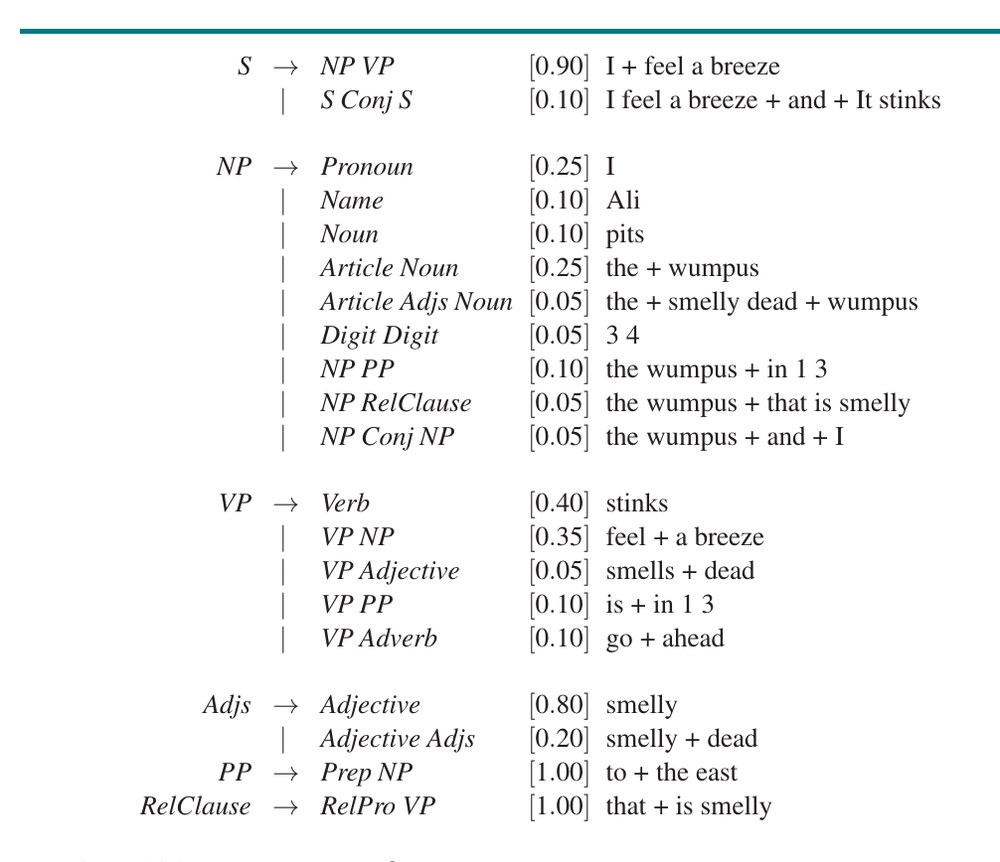
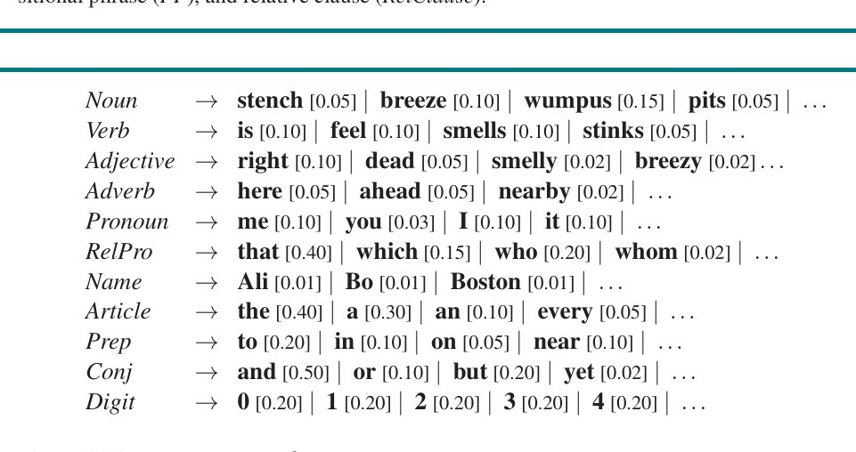
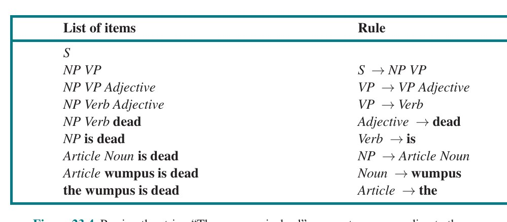
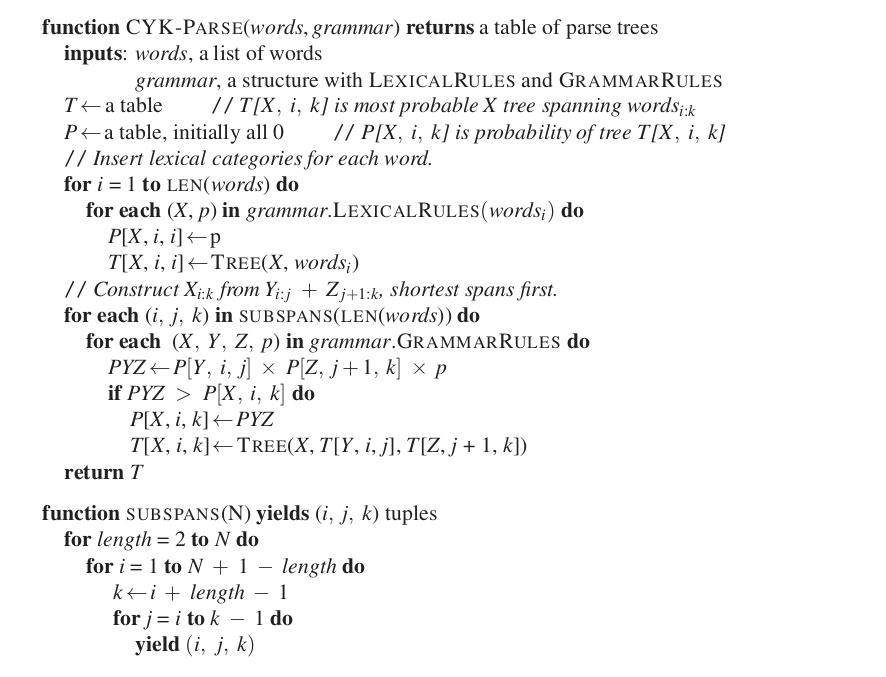
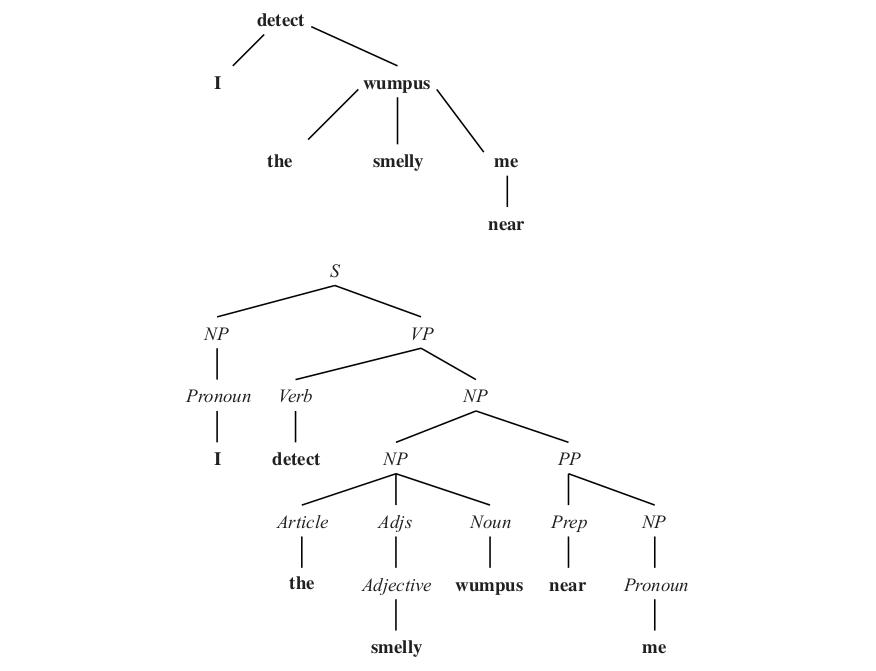
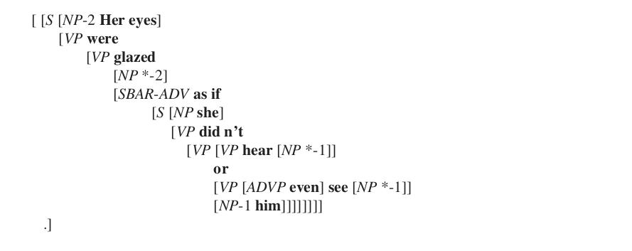
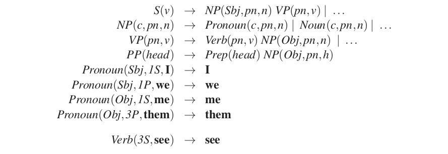
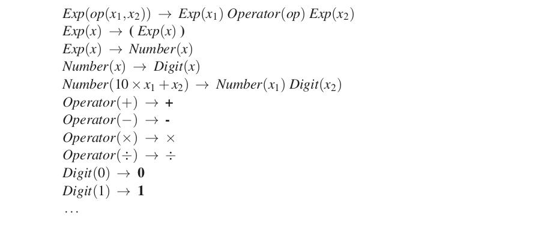
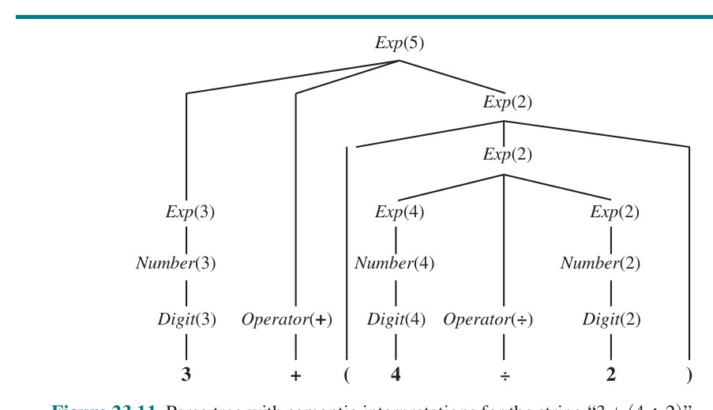
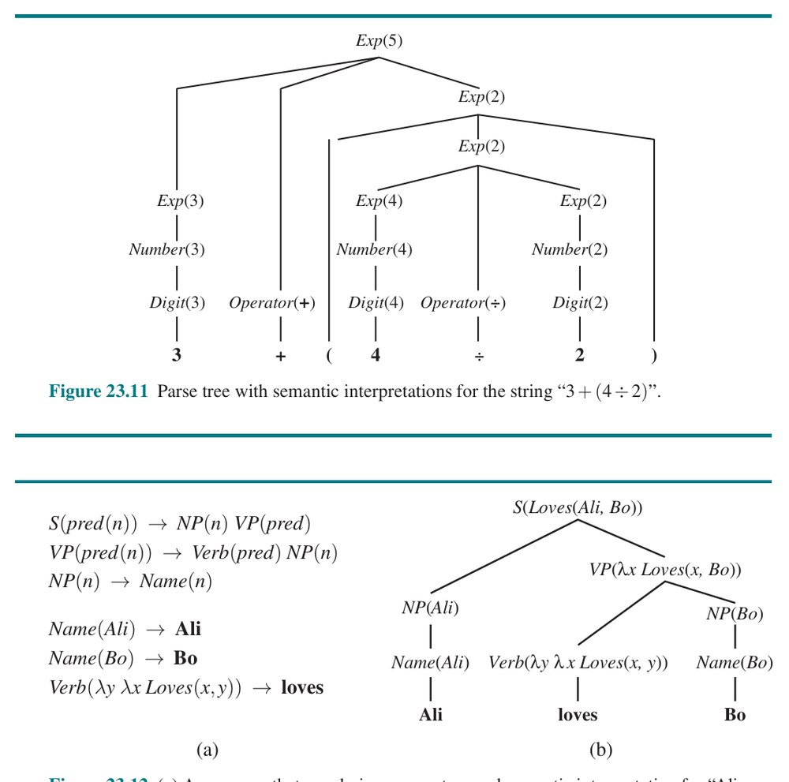

فصل ۲۳: پردازش زبان طبیعی (Natural Language Processing)
حدودِ ۱۰۰٬۰۰۰ سال پیش، انسانها یاد گرفتند چگونه صحبت کنند، و حدودِ ۵٬۰۰۰ سال پیش یاد گرفتند بنویسند. پیچیدگی و تنوعِ زبانِ بشری انسانِ هوشمند (Homo sapiens) را از همهٔ گونههای دیگر متمایز میکند. البته ویژگیهای دیگری نیز هستند که منحصراً انسانیاند: هیچ گونهٔ دیگری مانندِ انسانها لباس نمیپوشد، هنر نمیآفریند، یا روزی دو ساعت در شبکههای اجتماعی وقت نمیگذراند. اما وقتی آلن تورینگ آزمونِ هوشِ خود را پیشنهاد کرد، آن را بر زبان بنا نهاد، نه هنر یا لباسفروشی، شاید بهدلیلِ دامنهٔ همگانیِ آن و بهدلیلِ اینکه زبان بخشِ بسیار زیادی از رفتارِ هوشمند را درمیگیرد: گوینده (یا نویسنده) هدفِ انتقالِ دانشی را دارد، سپس زبانی را برنامهریزی میکند که آن دانش را بازنمایی میکند، و برای رسیدن به هدف کنش میکند. شنونده (یا خواننده) زبان را ادراک میکند و معنایِ موردنظر را استنتاج میکند.
این نوعِ ارتباط از طریقِ زبان به تمدن اجازه داده رشد کند؛ این وسیلهٔ اصلیِ ما برای انتقالِ دانشِ فرهنگی، حقوقی، علمی و فناورانه است. سه دلیلِ اصلی برای انجامِ «پردازش زبان طبیعی» (Natural Language Processing یا NLP) توسط رایانهها هست:
در این فصل مدلهای ریاضیِ گوناگونی برای زبان بررسی میکنیم و تکلیفهایی را بحث میکنیم که با آنها قابلِ انجاماند.
زبانهای صوری، مانندِ منطقِ مرتبهٔ اول، دقیقاً تعریف شدهاند، چنانکه در فصل ۸ دیدیم. دستورِ زبان (Grammar) نحوِ جملههای معتبر را تعریف میکند و قاعدههای معنایی معنا را تعریف میکنند. زبانهای طبیعی، مانندِ انگلیسی یا چینی، نمیتوانند چنان مرتب مشخص شوند:
اگر نتوانیم تمایزِ قطعیِ بولی بینِ رشتههای دستوری و غیردستوری قائل شویم، دستِکم میتوانیم بگوییم هر یک چقدر محتمل یا نامحتمل است.
«مدلِ زبان» (Language Model) را توزیعِ احتمالیای تعریف میکنیم که احتمالِ هر رشته را توصیف میکند. چنین مدلی باید بگوید «آیا جرئت میکنم جهان را برهم زنم؟» بهعنوانِ رشتهای از انگلیسی احتمالِ معقولی دارد، اما «جهان را من برهم زنم جرئت آیا میکنم؟» فوقالعاده نامحتمل است.
با مدلِ زبان، میتوانیم پیشبینی کنیم چه واژههایی محتملاند در ادامهٔ یک متن بیایند، و از این راه تکمیلهایی برای ایمیل یا پیامِ متنی پیشنهاد کنیم. میتوانیم محاسبه کنیم کدام تغییرها در یک متن آن را محتملتر میکنند، و از این راه تصحیحِ املا یا دستور پیشنهاد کنیم. با یک جفتِ مدل، میتوانیم محتملترین ترجمهٔ یک جمله را محاسبه کنیم. با چند مثالِ جفتِ پرسش/پاسخ بهعنوانِ دادهٔ آموزشی، میتوانیم محتملترین پاسخ به یک پرسش را محاسبه کنیم. پس مدلهای زبان در قلبِ طیفِ وسیعی از تکلیفهای زبانِ طبیعیاند.
خودِ تکلیفِ مدلسازیِ زبان نیز بهعنوانِ معیارِ رایجی برای اندازهگیریِ پیشرفت در فهمِ زبان عمل میکند. زبانهای طبیعی پیچیدهاند، پس هر مدلِ زبانی در بهترین حالت تقریبی خواهد بود.
زبانشناسِ ادوارد ساپیر گفت «هیچ زبانی بهطورِ مستبدانه سازگار نیست. همهٔ دستورها نشت میکنند» (ساپیر، 1921). فیلسوفِ دونالد دیویدسون گفت «چنین چیزی بهنامِ زبان وجود ندارد، نه اگر زبان ... ساختارِ مشترکِ بهوضوح تعریفشدهای باشد» (دیویدسون، 1986)، و منظورش این بود هیچ مدلِ زبانِ قطعیِ واحدی برای انگلیسی به همانگونه که برای پایتون 3.8 هست وجود ندارد؛ همهٔ ما مدلهای متفاوتی داریم، اما با این حال بهنحوی موفق میشویم سر و تهِ قضیه را هم بیاوریم و ارتباط برقرار کنیم. در این بخش مدلهای زبانِ سادهلوحانهای را پوشش میدهیم که بهوضوح نادرستاند، اما با این حال برای تکلیفهای خاصی مفید میمانند.
بخش ۱۲.۶.۱ توضیح داد چگونه مدلِ بیزِ سادهٔ مبتنی بر حضورِ واژههای خاص میتوانست جملهها را بهطورِ قابلِاعتمادی به ردهها ردهبندی کند؛ برای نمونه، جملهٔ (۱) زیر بهعنوانِ تجاری و (۲) بهعنوانِ آبوهوا ردهبندی میشود.
این بخش مدلِ بیزِ ساده را بازبینی میکند و آن را بهعنوانِ مدلِ زبانِ کاملی قالببندی میکند. یعنی فقط نمیخواهیم بدانیم کدام رده برای هر جمله محتملترین است؛ توزیعِ احتمالِ مشترکی بر همهٔ جملهها و ردهها میخواهیم. این پیشنهاد میکند همهٔ واژههای جمله را در نظر بگیریم. با توجه به جملهای شاملِ واژههای w₁, w₂, ..., w_N (که بهصورتِ w₁:ₙ مینویسیم، مانندِ فصل ۱۴)، فرمولِ بیزِ ساده (معادلهٔ (۱۲.۲۱)) به ما میدهد:
P(Class | w₁:ₙ) = α P(Class) ∏ⱼ P(wⱼ | Class)کاربردِ بیزِ ساده بر رشتههای واژه «مدلِ کیسهٔ واژهها» (Bag-of-Words Model) نامیده میشود. این مدلِ مولدِ است که فرایندی برای تولیدِ جمله توصیف میکند: تصور کنید برای هر رده (تجاری، آبوهوا و مانندِ آن) کیسهای پر از واژه داریم (میتوانید تصور کنید هر واژه روی کاغذپارهای درونِ کیسه نوشته شده؛ هرچه واژه رایجتر باشد، روی کاغذپارههای بیشتری تکرار شده). برای تولیدِ متن، نخست یکی از کیسهها را انتخاب کن و بقیه را دور بینداز. دست در آن کیسه ببر و واژهای را تصادفی بیرون بکش؛ این نخستین واژهٔ جمله خواهد بود. سپس واژه را برگردان و واژهٔ دومی بکش. تکرار کن تا نشانگرِ پایانِ جمله (مثلاً نقطه) کشیده شود.
این مدل بهوضوح نادرست است: بهصورتِ نادرست فرض میکند هر واژه از بقیه مستقل است، و بنابراین جملههای انگلیسیِ منسجم تولید نمیکند. اما به ما اجازه میدهد با فرمولِ بیزِ ساده ردهبندی را با دقتِ خوبی انجام دهیم: واژههای «سهام» و «درآمد» شاهدِ روشنی برای بخشِ تجاریاند، در حالی که «باران» و «ابری» بخشِ آبوهوا را پیشنهاد میکنند.
میتوانیم احتمالهای پیشینِ لازم برای این مدل را از طریقِ آموزشِ نظارتشده رویِ بدنه یا «پیکره» (Corpus)ای از متن یاد بگیریم، که در آن هر بخشِ متن با ردهای برچسب خورده. پیکرهٔ معمولاً شاملِ دستِکم یک میلیون واژه از متن و دستِکم دهها هزار واژهٔ واژگانِ متمایز است. اخیراً پیکرههای حتی بزرگتری استفاده میشوند، مانندِ ۲٫۵ میلیارد واژهٔ ویکیپدیا یا پیکرهٔ ۱۴ میلیارد واژهایِ iWeb که از ۲۲ میلیون صفحهٔ وب خراشیده شده.
از پیکره میتوانیم احتمالِ پیشینِ هر رده، P(Class)، را با شمارشِ اینکه هر رده چقدر رایج است برآورد کنیم. همچنین میتوانیم از شمارشها برای برآوردِ احتمالِ شرطیِ هر واژه با توجه به رده، P(wⱼ|Class)، استفاده کنیم. برای نمونه، اگر ۳۰۰۰ متن دیده باشیم و ۳۰۰ تای آنها تجاری ردهبندی شده باشند، میتوانیم برآورد کنیم P(Class = تجاری) ≈ 300/3000 = 0.1. و اگر درونِ ردهٔ تجاری ۱۰۰٬۰۰۰ واژه دیده باشیم و واژهٔ «سهام» ۷۰۰ بار ظاهر شده باشد، میتوانیم برآورد کنیم P(سهام|Class = تجاری) ≈ 700/100000 = 0.007.
برآورد با شمارش وقتی شمارشهای بالا (و واریانسِ پایین) داریم خوب کار میکند، اما در بخش ۲۳.۱.۴ راهِ بهتری برای برآوردِ احتمالها وقتی شمارشها پاییناند خواهیم دید.
گاهی رویکردِ متفاوتِ یادگیریِ ماشینی، مانندِ رگرسیونِ لجستیک، شبکههای عصبی یا ماشینهای بردارِ پشتیبان، میتواند حتی بهتر از بیزِ ساده کار کند. ویژگیهای مدلِ یادگیریِ ماشینی واژههای واژگاناند: «الف»، «آردوارک»، ...، «زیزیوا»، و مقادیر، تعدادِ دفعاتِ ظهورِ هر واژه در متناند (یا گاهی فقط مقدارِ بولیِ اینکه واژه ظاهر میشود یا نه). این بردارِ ویژگی را بزرگ و تنک میکند—ممکن است ۱۰۰٬۰۰۰ واژه در مدلِ زبان داشته باشیم، و بنابراین بردارِ ویژگیِ با طولِ ۱۰۰٬۰۰۰، اما برای متنِ کوتاه تقریباً همهٔ ویژگیها صفر خواهند بود.
چنانکه دیدهایم، برخی مدلهای یادگیریِ ماشینی وقتی انتخابِ ویژگی انجام میدهیم بهتر کار میکنند، و خود را به زیرمجموعهای از واژهها بهعنوانِ ویژگی محدود میکنیم. میتوانیم واژههایی را که بسیار نادرند (و بنابراین واریانسِ بالایی در قدرتِ پیشبینیشان دارند) و همچنین واژههایی را که برای همهٔ ردهها مشترکاند (مانندِ «آن») اما بینِ ردهها تمایز قائل نمیشوند حذف کنیم. همچنین میتوانیم ویژگیهای دیگر را با ویژگیهای واژهمحورِ خود ترکیب کنیم؛ برای نمونه، اگر پیامهای ایمیل را ردهبندی میکنیم، میتوانیم ویژگیهایی برای فرستنده، زمانِ ارسالِ پیام، واژههای سربرگِ موضوع، وجودِ نشانهگذاریِ غیراستاندارد، درصدِ حروفِ بزرگ، اینکه پیوستی هست یا نه، و مانندِ آن بیفزاییم.
توجه کنید تصمیمگیری دربارهٔ اینکه واژه چیست بیاهمیت نیست. آیا «aren't» یک واژه است، یا باید بهصورتِ «aren/’/t» یا «are/n't» یا چیزِ دیگری شکسته شود؟ فرایندِ تقسیمِ متن به دنبالهای از واژهها «توکنبندی» (Tokenization) نامیده میشود.
مدلِ کیسهٔ واژهها محدودیتهایی دارد. برای نمونه، واژهٔ «سهماهه» هم در ردهٔ تجاری و هم در ورزشی رایج است. اما دنبالهٔ چهارواژهایِ «گزارشِ درآمدِ سهماههٔ نخست» فقط در تجاری رایج است و «پاسهای touchdown سهماههٔ چهارم» فقط در ورزشی. میخواهیم مدلمان این تمایز را قائل شود. میتوانستیم مدلِ کیسهٔ واژهها را با رفتارکردن با عبارتهای خاص مانندِ «گزارشِ درآمدِ سهماههٔ نخست» بهعنوانِ واژههای تکی اصلاح کنیم، اما رویکردِ اصولیتر معرفیِ مدلِ تازهای است که در آن هر واژه به واژههای قبلی وابسته است.
P(w₁:ₙ) = ∏_{j=1}^{N} P(wⱼ | w₁:ⱼ₋₁)P(wⱼ | w₁:ⱼ₋₁) = P(wⱼ | w_{j−n+1:j−1})
P(w₁:ₙ) = ∏_{j=1}^{N} P(wⱼ | w_{j−n+1:j−1})مدلهای n-گرم برای ردهبندیِ بخشهای روزنامه، و همچنین برای دیگر تکلیفهای ردهبندی مانندِ «تشخیصِ هرزنامه» (Spam Detection) (تمایزِ ایمیلِ هرزنامه از غیرِ هرزنامه)، «تحلیلِ احساسات» (Sentiment Analysis) (ردهبندیِ نقدِ فیلم یا محصول بهعنوانِ مثبت یا منفی) و «انتسابِ نویسنده» (Author Attribution) خوب کار میکنند (همینگوی سبک و واژگانی متفاوت از فاکنر یا شکسپیر دارد).
جایگزینی برای مدلِ واژهایِ n-گرم، «مدلِ سطح-نویسه» (Character-Level Model) است که در آن احتمالِ هر نویسه توسط n−1 نویسهٔ قبلی تعیین میشود. این رویکرد برای برخورد با واژههای ناشناخته و برای زبانهایی که تمایل به بههمچسباندنِ واژهها دارند کمککننده است، مانندِ واژهٔ دانمارکیِ «Speciallægepraksisplanlægningsstabiliseringsperiode». مدلهای سطح-نویسه برای تکلیفِ «شناساییِ زبان» (Language Identification) بسیار مناسباند: با توجه به متنی، تعیین کن به چه زبانی نوشته شده. حتی با متنهای بسیار کوتاه مانندِ «Hello, world» یا «Wie geht's dir»، مدلهای n-گرمیِ حرفی میتوانند اولی را انگلیسی و دومی را آلمانی شناسایی کنند، که معمولاً به دقتی بیش از ۹۹٪ میرسند. (زبانهای نزدیکِ به هم مانندِ سوئدی و نروژی برای تمایز دشوارترند و به نمونههای بلندتری نیاز دارند؛ آنجا دقت در بازهٔ ۹۵٪ است.) مدلهای نویسهای در برخی تکلیفهای ردهبندی خوباند، مانندِ تصمیمگیری اینکه «دکستروآمفتامین» نامِ دارویی است، «کالنبرگر» نامِ شخصی است و «پلاتزبورگ» نامِ شهری است، حتی اگر این واژهها را هرگز قبلاً ندیده باشیم.
امکانِ دیگر «مدلِ اسکیپ-گرم» (Skip-Gram) است، که در آن واژههایی را میشماریم که نزدیکِ هماند اما یک واژه (یا بیشتر) بینِشان را میپریم. برای نمونه، با توجه به متنِ فرانسویِ «je ne comprends pas»، دوگرمیهای 1-اسکیپ «je comprends» و «ne pas» هستند. گردآوریِ اینها به ایجادِ مدلِ بهترِ فرانسوی کمک میکند، زیرا به ما دربارهٔ صرفکردن («je» با «comprends» میآید نه «comprend») و نفی («ne» با «pas» میآید) میگوید؛ این را از دوگرمیهای معمولیِ تنها نمیگرفتیم.
n-گرمهای پربسامد مانندِ «از آن» شمارشِ بالایی در پیکرهٔ آموزشی دارند، پس برآوردِ احتمالِشان به احتمالِ زیاد دقیق است: با پیکرهٔ آموزشیِ متفاوتی برآوردِ مشابهی میگرفتیم. n-گرمهای کمبسامد شمارشِ پایینی دارند که در معرضِ نویزِ تصادفیاند—واریانسِ بالایی دارند. اگر بتوانیم آن واریانس را هموار کنیم، مدلهایمان بهتر عمل خواهند کرد.
افزون بر این، همیشه این شانس هست که از ما خواسته شود متنی را ارزیابی کنیم که شاملِ واژهٔ ناشناخته یا «خارجاز-واژگان» (Out-of-Vocabulary) است: واژهای که هرگز در پیکرهٔ آموزشی ظاهر نشده. اما اشتباه خواهد بود به چنین واژهای احتمالِ صفر تخصیص دهیم، زیرا آنگاه احتمالِ کلِ جمله، P(w₁:ₙ)، صفر میشد.
یکی از راههای مدلکردنِ واژههای ناشناخته اصلاحِ پیکرهٔ آموزشی با جایگزینیِ واژههای کمبسامد با نمادِ خاصی است، بهطورِ سنتی <UNK>. میتوانیم از پیش تصمیم بگیریم فقط، مثلاً، ۵۰٬۰۰۰ واژهٔ رایجتر را نگه داریم، یا همهٔ واژههای با بسامدِ بیشتر از 0.0001٪، و بقیه را با <UNK> جایگزین کنیم. سپس شمارشهای n-گرم را برای پیکره مثلِ همیشه محاسبه کن، با رفتارکردن با <UNK> درست مانندِ هر واژهٔ دیگر. وقتی واژهٔ ناشناختهای در مجموعهٔ آزمون ظاهر میشود، احتمالش را تحتِ <UNK> نگاه میکنیم. گاهی نمادهای ناشناختهٔ متفاوتی برای انواعِ متفاوت استفاده میشوند. برای نمونه، رشتهای از رقمها ممکن است با <NUM> جایگزین شود، یا آدرسِ ایمیل با <EMAIL>. (توجه میکنیم همچنین توصیه میشود نمادِ خاصی مانندِ <S> برای علامتگذاریِ شروع (و توقفِ) متن داشته باشیم. به اینشیوه، وقتی فرمولِ احتمالهای دوگرمی واژهٔ قبل از نخستین واژه را میخواهد، پاسخ <S> است، نه خطا.)
حتی پس از مدیریتِ واژههای ناشناخته، مشکلِ n-گرمهای دیدهنشده را داریم. برای نمونه، متنِ آزمون ممکن است عبارتِ «ایدههای بیرنگِ سبزآبی» را داشته باشد، سه واژهای که ممکن است تکتک در پیکرهٔ آموزشی دیده باشیم، اما هرگز در آن ترتیبِ دقیق. مشکل این است که برخی n-گرمهای کماحتمال در پیکرهٔ آموزشی ظاهر میشوند، در حالی که دیگر n-گرمهای بهیکسانِ کماحتمال اتفاقاً اصلاً ظاهر نمیشوند. نمیخواهیم برخی از آنها احتمالِ صفر داشته باشند در حالی که برخی دیگر احتمالِ مثبتِ کوچکی دارند؛ میخواهیم «هموارسازی» (Smoothing) را بر همهٔ n-گرمهای مشابه اعمال کنیم—با رزروکردنِ بخشی از جرمِ احتمالِ مدل برای n-گرمهای هرگز-دیدهنشده، برای کاهشِ واریانسِ مدل.
سادهترین نوعِ هموارسازی توسط پیر-سیمون لاپلاس در قرنِ هجدهم برای برآوردِ احتمالِ رویدادهای نادر، مانندِ طلوعنکردنِ خورشیدِ فردا، پیشنهاد شد. نظریهٔ (نادرستِ) لاپلاس از سامانهٔ خورشیدی پیشنهاد میکرد خورشید حدودِ N = ۲ میلیون روز عمر دارد. بر اساسِ دادهها، در هیچیک از آن دو میلیون روز پیش نیامده بود که خورشید طلوع نکند، با این حال نمیخواهیم بگوییم احتمال دقیقاً صفر است. لاپلاس نشان داد اگر پیشینِ یکنواختی برگزینیم و آن را با شواهدِ تاکنون ترکیب کنیم، بهترین برآوردِ 1/(N+2) را برای احتمالِ طلوعنکردنِ خورشیدِ فردا میگیریم—یا طلوع میکند یا نمیکند (این همان ۲ در مخرج است) و پیشینِ یکنواخت میگوید به همان اندازه محتمل است یا نیست (این همان ۱ در صورت است). «هموارسازیِ لاپلاس» (Laplace Smoothing) (که «هموارسازیِ جمع-یک» نیز نامیده میشود) گامی در جهتِ درست است، اما برای بسیاری از کاربردهای زبانِ طبیعی ضعیف عمل میکند.
انتخابِ دیگر «مدلِ پسروی» (Backoff Model) است، که در آن با برآوردِ شمارشهای n-گرم شروع میکنیم، اما برای هر دنبالهٔ خاصی که شمارشِ پایین (یا صفر) دارد، به (n−1)-گرمها پسروی میکنیم. «هموارسازیِ درونیابیِ خطی» (Linear Interpolation Smoothing) مدلِ پسرویِ است که مدلهای سهگرمی، دوگرمی و تکگرمی را با درونیابیِ خطی ترکیب میکند. برآوردِ احتمال را بهصورتِ زیر تعریف میکند:
P̂(cᵢ | c_{i−2:i−1}) = λ₃ P(cᵢ | c_{i−2:i−1}) + λ₂ P(cᵢ | c_{i−1}) + λ₁ P(cᵢ)که λ₃ + λ₂ + λ₁ = 1. مقادیرِ پارامترِ λᵢ میتوانند ثابت باشند، یا میتوانند با الگوریتمِ بیشینهسازیِ امید (EM) آموزش ببینند. همچنین ممکن است مقادیرِ λᵢ به شمارشها وابسته باشند: اگر شمارشِ بالایی از سهگرمها داشته باشیم، آنها را نسبتاً بیشتر وزن میکنیم؛ اگر فقط شمارشِ پایینی باشد، وزنِ بیشتری بر مدلهای دوگرمی و تکگرمی میگذاریم.
یک اردوگاه از پژوهشگران فنونِ هموارسازیِ روزبهروز پیچیدهتری توسعه دادهاند (مانندِ ویتن-بل و کنزر-نی)، در حالی که اردوگاهِ دیگر گردآوریِ پیکرهٔ بزرگتری را پیشنهاد میکند تا حتی فنونِ سادهٔ هموارسازی خوب کار کنند (یکی از این رویکردها «پسرویِ احمقانه» نامیده میشود). هر دو به همان هدف میرسند: کاهشِ واریانس در مدلِ زبان.
n-گرمها میتوانند مدلی به ما بدهند که احتمالِ دنبالههای واژه را دقیقاً پیشبینی میکند، و به ما بگوید، برای نمونه، «یک گربهٔ سیاه» عبارتِ انگلیسیِ محتملتری از «گربهٔ سیاه یک» است، زیرا «یک گربهٔ سیاه» در حدودِ 0.000014٪ از سهگرمهای پیکرهٔ آموزشی ظاهر میشود، در حالی که «گربهٔ سیاه یک» اصلاً ظاهر نمیشود. هر آنچه مدلِ واژهایِ n-گرم میداند، از شمارشِ دنبالههای خاصِ واژه آموخته.
اما گویندهٔ بومیِ انگلیسی داستانِ متفاوتی میگوید: «یک گربهٔ سیاه» معتبر است، زیرا از الگویِ آشنا (حرفِ تعریف-صفت-اسم) پیروی میکند، در حالی که «گربهٔ سیاه یک» نمیکند. حالا عبارتِ «the fulvous kitten» («بچهگربهٔ زردِ مایل به قهوهای») را در نظر بگیر. گویندهٔ انگلیسی میتواند این را نیز پیروِ الگویِ حرفِ تعریف-صفت-اسم بازشناسی کند (حتی گویندهای که نمیداند «fulvous» به معنای «زردِ مایل به قهوهای» است میتواند بازشناسی کند تقریباً همهٔ واژههایی که به «-ous» ختم میشوند صفتاند). افزون بر این، گوینده پیوندِ نحویِ نزدیک بینِ «a» و «the» و همچنین رابطهٔ معناییِ نزدیک بینِ «cat» و «kitten» را بازشناسی میکند. پس، ظهورِ «یک گربهٔ سیاه» در داده، از طریقِ تعمیم، شاهدِ این است که «the fulvous kitten» نیز انگلیسیِ معتبر است.
مدلِ n-گرم این تعمیم را از دست میدهد، زیرا مدلِ اتمی است: هر واژه اتمی است، متمایز از هر واژهٔ دیگر، بدونِ ساختارِ درونی. در سراسرِ این کتاب دیدهایم مدلهای عاملبندیشده یا ساختیافته امکانِ قدرتِ بیانیِ بیشتر و تعمیمِ بهتر را فراهم میکنند. در بخش ۲۴.۱ خواهیم دید مدلِ عاملبندیشدهای به نامِ «جاسازیِ واژه» تواناییِ بهتری برای تعمیم میدهد.
یکی از انواعِ مدلِ واژهٔ ساختیافته «فرهنگِ لغت» (Dictionary) است، که معمولاً با کارِ دستی ساخته میشود. برای نمونه، «وُردنت» (WordNet) فرهنگِ لغتِ متنباز و دستبهروزشده در قالبِ خواندنیِ ماشینی است که برای بسیاری از کاربردهای زبانِ طبیعی مفید ثابت شده.¹ در زیر مدخلِ وردنت برای «kitten» است:
«kitten» <noun.animal> («گربهٔ خانگیِ جوان») IS A: young_mammal «kitten» <verb.body> («به دنیا آوردن بچهگربه») EXAMPLE: «گربهمان امسال دوباره بچهگربه به دنیا آورد»
وردنت به شما کمک میکند اسمها را از فعلها جدا کنید و ردههای پایه را بگیرید (بچهگربه پستاندارِ جوانی است، که پستانداری است، که حیوانی است)، اما جزئیاتِ اینکه بچهگربه چه شکلی است یا چگونه رفتار میکند را به شما نمیگوید. وردنت به شما میگوید دو زیرردهٔ گربه، گربهٔ سیامی و گربهٔ مانکساند، اما چیزِ بیشتری دربارهٔ نژادها به شما نمیگوید.
یکی از راههای پایهٔ ردهبندیِ واژهها «نقشِ دستوری» (Part of Speech یا POS) است، که «ردهٔ واژگانی» یا برچسب نیز نامیده میشود: اسم، فعل، صفت و مانندِ آن. نقشهای دستوری به مدلهای زبان اجازه میدهند تعمیمهایی مانندِ «صفتها در انگلیسی عموماً پیش از اسمها میآیند» را دربرگیرند. (در زبانهای دیگر، مانندِ فرانسوی، برعکس است (عموماً).)
همه موافقاند «اسم» و «فعل» نقشهای دستوریاند، اما وقتی وارد جزئیات میشویم هیچ فهرستِ قطعیِ واحدی نیست. شکل ۲۳.۱ ۴۵ برچسبِ استفادهشده در «درختبانِ پن» (Penn Treebank) را نشان میدهد، پیکرهای از بیش از سه میلیون واژهٔ متنِ حاشیهنویسیشده با برچسبهای نقشِ دستوری. چنانکه بعداً خواهیم دید، درختبانِ پن همچنین بسیاری از جملهها را با درختهای تجزیهٔ نحوی حاشیهنویسی میکند، که پیکره نامش را از آن میگیرد. در اینجا گزیدهای است که میگوید «from» با برچسبِ حرفِ اضافه (IN)، «the» با برچسبِ تعیینکننده (DT) و مانندِ آن مشخص شده:
From the start , it took a person with great qualities to succeed IN DT NN , PRP VBD DT NN IN JJ NNS TO VB (به فارسی: «از آغاز، شخصی با ویژگیهای بزرگ لازم بود تا موفق شود» — حرفِ اضافه (IN)، تعیینکننده (DT)، اسم (NN)، ویرگول (،)، ضمیرِ شخصی (PRP)، فعلِ گذشته (VBD) و مانندِ آن.)
| برچسب | واژه | توصیف | برچسب | واژه | توصیف |
|---|---|---|---|---|---|
| CC | and | حرفِ ربطِ همپایهساز | PRP$ | your | ضمیرِ ملکی |
| CD | three | عددِ اصلی | RB | quickly | قید |
| DT | the | تعیینکننده | RBR | quicker | قید، تفضیلی |
| EX | there | وجودیِ there | RBS | quickest | قید، عالی |
| FW | per se | واژهٔ خارجی | RP | off | ذره |
| IN | of | حرفِ اضافه | SYM | + | نماد |
| JJ | purple | صفت | TO | to | to |
| JJR | better | صفت، تفضیلی | UH | eureka | حرفِ ندا |
| JJS | best | صفت، عالی | VB | talk | فعل، شکلِ پایه |
| LS | (موردِ فهرست) | نشانگرِ آیتمِ فهرست | VBD | talked | فعل، زمانِ گذشته |
| MD | should | فعلِ وجهی | VBG | talking | فعل، ونددار (gerund) |
| NN | kitten | اسم، مفرد یا جرم | VBN | talked | فعل، اسممفعولی (participle) |
| NNS | kittens | اسم، جمع | VBP | talk | فعل، غیرسومشخص |
| NNP | Ali | اسمِ خاص، مفرد | VBZ | talks | فعل، سومشخص |
| NNPS | Fords | اسمِ خاص، جمع | WDT | which | تعیینکنندهٔ پرسشی |
| PDT | all | پیشتعیینکننده | WP | who | ضمیرِ پرسشی |
| POS | 's | پایانِ ملکی | WP$ | whose | ضمیرِ پرسشیِ ملکی |
| PRP | you | ضمیرِ شخصی | WRB | where | قیدِ پرسشی |
| $ | $ | علامتِ دلار | # | # | علامتِ پوند |
| « | « | نقلقولِ چپ | » | » | نقلقولِ راست |
| ( | ( | پرانتزِ چپ | ) | ) | پرانتزِ راست |
| , | , | ویرگول | . ! | . ! | پایانِ جمله |
| : ; | : ; | نشانهگذاریِ میانِ جمله |
تکلیفِ تخصیصِ نقشِ دستوری به هر واژهٔ جمله «برچسبگذاریِ نقشِ دستوری» (Part-of-Speech Tagging) نامیده میشود. هرچند بهخودیِخود چندان جالب نیست، گامِ نخستِ مفیدی در بسیاری از تکلیفهای دیگرِ NLP است، مانندِ پاسخگوییِ پرسش یا ترجمه. حتی برای تکلیفِ سادهای مانندِ سنتزِ متنبهگفتار، مهم است بدانیم اسمِ «record» با فعلِ «record» متفاوت تلفظ میشود. در این بخش خواهیم دید چگونه دو مدلِ آشنا را میتوان بر تکلیفِ برچسبگذاری اعمال کرد، و در فصل ۲۴ مدلِ سومی را بررسی خواهیم کرد.
یکی از مدلهای رایج برای برچسبگذاریِ POS «مدلِ مارکوفِ پنهان» (HMM) است. از بخش ۱۴.۳ به یاد آورید مدلِ مارکوفِ پنهان دنبالهٔ زمانیِ مشاهدههای شاهد را میگیرد و محتملترین حالتهای پنهانی را پیشبینی میکند که میتوانستند آن دنباله را تولید کرده باشند. در مثالِ HMM در صفحهٔ ۴۷۳، شاهدها از مشاهدههای شخصی که چتر حمل میکرد (یا نمیکرد) تشکیل شده بودند، و حالتِ پنهان باران (یا نبودِ آن) در جهانِ بیرون بود. برای برچسبگذاریِ POS، شاهدها دنبالهٔ واژهها، W₁:ₙ، و حالتهای پنهان ردههای واژگانی، C₁:ₙ هستند. HMM مدلِ مولدِ است که میگوید راهِ تولیدِ زبان این است که در حالتی شروع کنی، مانندِ IN، حالتِ حروفِ اضافه، و سپس دو انتخاب کنی: چه واژهای (مانندِ from) باید نشر شود، و چه حالتی (مانندِ DT) باید بعد بیاید. مدل هیچ بافتی بهجز حالتِ نقشِ دستوریِ کنونی را در نظر نمیگیرد، و هیچ ایدهای از آنچه جمله واقعاً میکوشد منتقل کند ندارد. و با این حال مدلِ مفیدی است—اگر «الگوریتمِ وایتبی» (Viterbi Algorithm) (بخش ۱۴.۲.۳) را برای یافتنِ محتملترین دنبالهٔ حالتهای پنهان (برچسبها) اعمال کنیم، مییابیم برچسبگذاری به دقتِ بسیار بالایی میرسد؛ معمولاً حدودِ ۹۷٪.
برای ساختِ HMM برای برچسبگذاریِ POS، به مدلِ انتقال نیاز داریم، که احتمالِ آمدنِ یک نقشِ دستوری پس از نقشِ دیگر، P(Cₜ|Cₜ₋₁)، و مدلِ حسگذار، P(Wₜ|Cₜ) را میدهد. برای نمونه، P(Cₜ = VB|Cₜ₋₁ = MD) = 0.8 به این معناست که با توجه به فعلِ وجهی (مانندِ would)، میتوانیم انتظار داشته باشیم واژهٔ بعدی با احتمالِ 0.8 فعل (مانندِ think) باشد. عددِ 0.8 از کجا میآید؟ درست مانندِ مدلهای n-گرم، از شمارشها در پیکره، با هموارسازیِ مناسب. معلوم میشود در درختبانِ پن 13124 نمونهٔ MD هست، و 10471 تای آنها با VB دنبال میشوند.
برای مدلِ حسگذار، P(Wₜ = would|Cₜ = MD) = 0.1 به این معناست که وقتی فعلِ وجهی انتخاب میکنیم، ۱۰٪ مواقع would را انتخاب میکنیم. این عددها نیز از شمارشِ پیکره، با هموارسازی، میآیند.
ضعفِ مدلهای HMM این است که هر آنچه دربارهٔ زبان میدانیم باید بر حسبِ مدلهای انتقال و حسگذار بیان شود. نقشِ دستوریِ واژهٔ کنونی صرفاً توسط احتمالهای این دو مدل و توسط نقشِ دستوریِ واژهٔ قبلی تعیین میشود. هیچ راهِ آسانی برای توسعهدهندهٔ سامانه نیست بگوید، برای نمونه، هر واژهای که به «ous» ختم میشود احتمالاً صفت است، یا در عبارتِ «attorney general»، attorney اسم است نه صفت.
خوشبختانه، رگرسیونِ لجستیک تواناییِ بازنماییِ چنین اطلاعاتی را دارد. از بخش ۱۹.۶.۵ به یاد آورید در مدلِ رگرسیونِ لجستیک، ورودی بردارِ x از مقادیرِ ویژگی است. سپس ضربِ نقطهایِ w·x آن ویژگیها را با بردارِ وزنِ ازپیشآموزشدیدهای از w میگیریم، و آن جمع را به عددی بینِ ۰ و ۱ تبدیل میکنیم که میتواند بهعنوانِ احتمالِ مثبتبودنِ ورودی برای یک رده تفسیر شود.
وزنهای مدلِ رگرسیونِ لجستیک متناظرند با اینکه هر ویژگی چقدر برای هر رده پیشبینانه است؛ مقادیرِ وزن توسط نزولِ گرادیان یاد گرفته میشوند. برای برچسبگذاریِ POS، ۴۵ مدلِ رگرسیونِ لجستیکِ متفاوت میسازیم، یکی برای هر نقشِ دستوری، و از هر مدل میپرسیم چقدر محتمل است واژهٔ نمونهای عضوی از آن رده باشد، با توجه به مقادیرِ ویژگیِ آن واژه در بافتِ خاصش.
پرسش سپس این است که ویژگیها باید چه باشند؟ برچسبگذارهای POS معمولاً از ویژگیهای بولیمقدار استفاده میکنند که اطلاعاتی دربارهٔ واژهٔ درحالِ برچسبگذاری، wᵢ (و شاید دیگر واژههای نزدیک)، و همچنین ردهای که به واژهٔ قبلی، c_{i−1} (و شاید ردهٔ واژههای قبلی) تخصیص داده شده، رمز میکنند. ویژگیها میتوانند به هویتِ دقیقِ واژه، برخی جنبههای طرزِ املایِ آن، یا صفتی از یک مدخلِ فرهنگِ لغت بستگی داشته باشند. مجموعهای از ویژگیهای برچسبگذاریِ POS ممکن است شاملِ اینها باشد:
w_{i−1} = «I» | w_{i+1} = «for» w_{i−1} = «you» | c_{i−1} = IN wᵢ به «ous» ختم میشود | wᵢ شاملِ خطِ فاصله است wᵢ به «ly» ختم میشود | wᵢ شاملِ رقم است wᵢ با «un» شروع میشود | wᵢ تماماً حروفِ بزرگ است w_{i−2} = «to» و c_{i−1} = VB | w_{i−2} ویژگیِ PRESENT دارد w_{i−1} = «I» و w_{i+1} = «to» | w_{i−2} ویژگیِ PAST دارد
برای نمونه، واژهٔ «walk» میتواند اسم یا فعل باشد، اما در «I walk to school»، ویژگیِ ردیفِ آخرِ ستونِ چپ میتواند برای ردهبندیِ «walk» بهعنوانِ فعل (VBP) استفاده شود. بهعنوانِ مثالِ دیگر، واژهٔ «cut» میتواند اسم (NN)، فعلِ زمانِ گذشته (VBD) یا فعلِ زمانِ حال (VBP) باشد. با توجه به جملهٔ «Yesterday I cut the rope»، ویژگیِ ردیفِ آخرِ ستونِ راست میتواند به برچسبگذاریِ «cut» بهعنوانِ VBD کمک کند، در حالی که در جملهٔ «Now I cut the rope»، ویژگیِ بالاتر از آن میتواند به برچسبگذاریِ «cut» بهعنوانِ VBP کمک کند.
در مجموع، ممکن است یک میلیون ویژگی باشد، اما برای هر واژهٔ دادهشده، فقط چند دهتای آنها ناصفر خواهند بود. ویژگیها معمولاً توسط طراحِ انسانیِ سامانه ساخته میشوند که به قالبهای ویژگیِ جالبی فکر میکند.
رگرسیونِ لجستیک مفهومِ دنبالهای از ورودیها را ندارد—شما یک بردارِ ویژگیِ تنها به آن میدهید (اطلاعاتی دربارهٔ یک واژهٔ تنها) و خروجی (برچسبی) تولید میکند. اما میتوانیم رگرسیونِ لجستیک را با جستجویِ حریصانه مجبور به مدیریتِ دنباله کنیم: با انتخابِ محتملترین رده برای نخستین واژه شروع کن و به بقیهٔ واژهها در ترتیبِ چپ-به-راست برو. در هر گام، ردهٔ cᵢ طبقِ زیر تخصیص داده میشود:
cᵢ = argmax_{c′∈Categories} P(c′ | w₁:ₙ, c₁:ᵢ₋₁)یعنی، ردهبند اجازه دارد به هر یک از ویژگیهای غیرردهایِ هر یک از واژهها در هر جایِ جمله نگاه کند (زیرا همهٔ این ویژگیها ثابتاند)، و همچنین به هر ردهٔ قبلاً تخصیصدادهشده. توجه کنید جستجویِ حریصانه برای هر واژه انتخابِ ردهٔ قطعیای میکند و سپس به واژهٔ بعدی میرود؛ اگر آن انتخاب توسط شاهدِ بعدی در جمله نقض شود، هیچ امکانی برای بازگشت و معکوسکردنِ انتخاب نیست. این الگوریتم را سریع میکند. الگوریتمِ وایتبی، در مقابل، جدولی از همهٔ انتخابهای ردهٔ ممکن در هر گام نگه میدارد و همیشه گزینهٔ تغییر را دارد. این الگوریتم را دقیقتر، اما کندتر میکند.
برای هر دو الگوریتم، مصالحهای «جستجویِ پرتویی» (Beam Search) است، که در آن هر ردهٔ ممکن را در هر گامِ زمانی در نظر میگیریم، اما سپس فقط b برچسبِ محتملتر را نگه میداریم و بقیهٔ برچسبهای کممحتملتر را میاندازیم. تغییرِ b سرعت را با دقت مبادله میکند.
بیزِ ساده و مدلهای مارکوفِ پنهان مدلهای مولدند (بخش ۲۰.۲.۳ را ببینید). یعنی توزیعِ احتمالِ مشترکی، P(W,C)، یاد میگیرند، و میتوانیم با نمونهبرداری از آن توزیعِ احتمال جملهٔ تصادفی تولید کنیم تا نخستین واژه (با رده) جمله را بگیریم و سپس واژهها را یکییکی بیفزاییم.
رگرسیونِ لجستیک، از سوی دیگر، مدلِ متمایزگر است. توزیعِ احتمالِ شرطیِ P(C|W) یاد میگیرد، یعنی میتواند با توجه به دنبالهای از واژهها رده تخصیص دهد، اما نمیتواند جملهٔ تصادفی تولید کند. بهطورِ کلی، پژوهشگران دریافتهاند مدلهای متمایزگر نرخِ خطایِ پایینتری دارند، شاید بهدلیلِ اینکه خروجیِ موردنظر را مستقیماً مدل میکنند، و شاید بهدلیلِ اینکه ایجادِ ویژگیهای اضافی را برای تحلیلگر آسانتر میکنند. با این حال، مدلهای مولد تمایل به همگراییِ سریعتر دارند، و بنابراین ممکن است وقتی زمانِ آموزشیِ در دسترس کوتاه است یا دادهٔ آموزشیِ محدودی هست ترجیح داده شوند.
برای گرفتنِ حسی از اینکه مدلهای n-گرمِ متفاوت چگونهاند، مدلهای تکگرمی (یعنی کیسهٔ واژهها)، دوگرمی، سهگرمی و 4-گرمی را رویِ واژههای این کتاب ساختیم و سپس دنبالههای واژه را بهصورتِ تصادفی از هر یک از چهار مدل نمونهبرداری کردیم:
از این نمونهٔ کوچک باید روشن باشد مدلِ تکگرمی تقریبِ بسیار ضعیفی است چه از انگلیسیِ بهطورِ کلی و چه از کتابِ درسیِ هوش مصنوعی بهطورِ خاص، و اینکه مدلِ 4-گرمی ناقص اما بسیار بهتر است. سپس، برای نشاندادنِ اینکه نمونهها چگونه بینِ منابعِ آموزشی جابهجا میشوند (و قطعاً نه فقط برای سرگرمی)، متنِ کتابِ مقدسِ شاهِ جیمز را به مدلِ 4-گرمی افزودیم که این نمونههای تصادفی را به دست داد:
برای مدلهای n-گرم حدی هست—هرچه n افزایش یابد، زبانی روانتر تولید میکنند، اما تمایل دارند قطعاتِ بلند را از دادهٔ آموزشیِ خود عیناً بازتولید کنند، بهجای تولیدِ متنِ نو. مدلهای زبان با بازنماییهای پیچیدهترِ واژهها و بافت میتوانند بهتر عمل کنند. بقیهٔ این فصل نشان میدهد دستورِ زبان چگونه میتواند مدلِ زبان را بهبود دهد، و فصل ۲۴ نشان میدهد روشهای یادگیری عمیق اخیراً چگونه مدلهای زبانِ چشمگیری تولید کردهاند. یکی از این مدلهای یادگیری عمیق، GPT-2، میتواند با دادنِ سرنخ، نمونههای انگلیسیِ روان تولید کند. ما دو جملهٔ نخستِ این پاراگراف را بهعنوانِ سرنخ به GPT-2 دادیم؛ دو نمونهٔ زیر را تولید کرد:
میبینیم این قطعات متنوع و از نظرِ دستوری رواناند؛ افزون بر این، به موضوعاتی میچسبند که با جملههای سرنخ مرتبطاند. اما جملهها بر رویِ هم ساخته نمیشوند تا پایاننامهای منسجم را پیش ببرند. مدلِ زبانِ GPT-2 بهعنوانِ «مدلِ ترنسفورمر» شناخته میشود، که در بخش ۲۴.۴ پوشش داده خواهد شد؛ مثالهای بیشتری از GPT-2 در شکل ۲۴.۱۴ هست. مدلِ ترنسفورمرِ دیگر «زبانِ ترنسفورمرِ شرطی»، CTRL است. میتوان آن را انعطافپذیرتر کنترل کرد؛ در نمونههای زیر از CTRL خواسته شد متنی در ردهٔ نقدِ محصول با امتیازِ ۱ و ۴ (از ۵) تولید کند:
در فصل ۷ از فرمِ بکوس-نائور (BNF) برای نوشتنِ دستورِ زبانِ منطقِ مرتبهٔ اول استفاده کردیم. دستورِ زبان مجموعهای از قاعدههاست که ساختارِ درختیِ عبارتهای مجاز را تعریف میکند، و زبان مجموعهٔ جملههایی است که از آن قاعدهها پیروی میکنند.
زبانهای طبیعی دقیقاً مانندِ زبانِ صوریِ منطقِ مرتبهٔ اول کار نمیکنند—مرزِ سختی بینِ جملههای مجاز و غیرمجاز ندارند، و ساختارِ درختیِ قطعیِ واحدی برای هر جمله ندارند. با این حال، ساختارِ سلسلهمراتبی در زبانِ طبیعی مهم است. واژهٔ «سهام» در «سهام دوشنبه جهش کرد» فقط یک واژه نیست، و فقط یک اسم نیست؛ در این جمله همچنین گروهِ اسمیِ (Noun Phrase) را تشکیل میدهد، که فاعلِ گروهِ فعلیِ بعدی است. «ردههای نحوی» (Syntactic Category) مانندِ گروهِ اسمی یا گروهِ فعلی به محدودکردنِ واژههای محتمل در هر نقطهٔ درونِ جمله کمک میکنند، و «ساختارِ عبارتی» (Phrase Structure) چارچوبی برای معنا یا معناشناسیِ جمله فراهم میکند.
مدلهای زبانِ رقیبِ بسیاری بر ایدهٔ ساختارِ نحویِ سلسلهمراتبی مبتنیاند؛ در این بخش مدلِ محبوبی به نامِ «دستورِ مستقل از بافتِ احتمالاتی» (Probabilistic Context-Free Grammar یا PCFG) توصیف میکنیم. دستورِ احتمالاتی به هر رشته احتمالی تخصیص میدهد، و «مستقل از بافت» به این معناست که هر قاعدهای را میتوان در هر بافتی استفاده کرد: قاعدههای یک گروهِ اسمی در آغازِ جمله همان قاعدههای گروهِ اسمیِ دیگر در انتهایِ جملهاند، و اگر همان عبارت در دو مکان رخ دهد، باید هر بار همان احتمال را داشته باشد.
دستورِ PCFGای را برای قطعهای کوچک از انگلیسی تعریف میکنیم که برای ارتباط بینِ عاملهای کاوشگرِ جهانِ وومپوس مناسب است. این زبان را E₀ مینامیم (شکل ۲۳.۲ را ببینید). قاعدهٔ دستوری مانندِ:
Adjs → Adjective [0.80] | Adjective Adjs [0.20]به این معناست که ردهٔ نحویِ Adjs میتواند یا از یک صفتِ تنها، با احتمالِ 0.80، یا از صفتی که دنبالهای تشکیلدهندهٔ Adjs دنبالش میکند، با احتمالِ 0.20، تشکیل شود.


متأسفانه، دستور «بیشتولید» (Overgeneration) میکند: یعنی جملههایی تولید میکند که دستوری نیستند، مانندِ «Me go I». همچنین «کمتولید» (Undergeneration) میکند: جملههای انگلیسیِ بسیاری هست که رد میکند، مانندِ «I think the wumpus is smelly» («فکر میکنم وومپوس بدبو است»). بعداً خواهیم دید چگونه دستورِ بهتری یاد بگیریم؛ فعلاً رویِ آنچه با این دستورِ بسیار ساده میتوانیم انجام دهیم تمرکز میکنیم.
«واژگان» (Lexicon)، یا فهرستِ واژههای مجاز، در شکل ۲۳.۳ تعریف شده. هر یک از ردههای واژگانی به «...» ختم میشود تا نشان دهد واژههای دیگری نیز در رده هستند. برای اسمها، نامها، فعلها، صفتها و قیدها، حتی در اصل نیز شمارشِ همهٔ واژهها شدنی نیست. نهتنها دهها هزار عضو در هر رده هست، بلکه عضوهای تازه—مانندِ humblebrag یا microbiome—دائماً اضافه میشوند. این پنج رده «ردههای باز» (Open Class) نامیده میشوند. ضمیرها، ضمیرهای موصولی، حرفهای تعریف، حرفهای اضافه و حرفهای ربط «ردههای بسته» (Closed Class) نامیده میشوند؛ تعدادِ کمی واژه دارند (حدودِ یکدوجین) و در طولِ قرنها تغییر میکنند، نه ماهها. برای نمونه، «thee» و «thou» ضمیرهای پرکاربردِ قرنِ هفدهم بودند، در قرنِ نوزدهم رو به افول نهادند و امروزه فقط در شعر و برخی گویشهای منطقهای دیده میشوند.
«تجزیه» (Parsing) فرایندِ تحلیلِ رشتهای از واژهها برای آشکارکردنِ ساختارِ عبارتیاش، طبقِ قاعدههای یک دستور، است. میتوانیم آن را جستجویی برای درختِ تجزیهٔ معتبری بدانیم که برگهایش واژههای رشتهاند. شکل ۲۳.۴ نشان میدهد میتوانیم با نمادِ S شروع کنیم و بالا-به-پایین جستجو کنیم، یا با واژهها شروع کنیم و پایین-به-بالا جستجو کنیم. راهبردهای تجزیهٔ صرفاً بالا-به-پایین یا پایین-به-بالا میتوانند ناکارآمد باشند، زیرا ممکن است در مناطقی از فضایِ جستجو که به بنبست میانجامند تلاش را تکرار کنند. دو جملهٔ زیر را در نظر بگیر:
Have the students in section 2 of Computer Science 101 take the exam. (به فارسی: «دانشجویان بخش ۲ درس ۱۰۱ علوم رایانه امتحان را بگیرند.») Have the students in section 2 of Computer Science 101 taken the exam? (به فارسی: «آیا دانشجویان بخش ۲ درس ۱۰۱ علوم رایانه امتحان را گرفتهاند؟»)
حتی اگر ده واژهٔ نخست را مشترکاند، این جملهها تجزیههای بسیار متفاوتی دارند، زیرا نخستین دستور است و دومین پرسش. الگوریتمِ تجزیهٔ چپ-به-راست باید حدس بزند نخستین واژه بخشی از دستور است یا پرسش، و تا دستِکم یازدهمین واژه، take یا taken، قادر به گفتنِ اینکه حدس درست است یا نه نخواهد بود. اگر الگوریتم اشتباه حدس بزند، باید همهراه تا نخستین واژه پسگرد کند و کلِ جمله را تحتِ تفسیرِ دیگر بازتحلیل کند.
برای اجتناب از این منبعِ ناکارآمدی میتوانیم از برنامهنویسیِ پویا استفاده کنیم: هر بار که زیررشتهای را تحلیل میکنیم، نتایج را ذخیره کن تا مجبور نباشیم بعداً آن را بازتحلیل کنیم. برای نمونه، وقتی کشف میکنیم «the students in section 2 of Computer Science 101» گروهِ اسمی است، میتوانیم آن نتیجه را در ساختارِ دادهای به نامِ «نمودار» (Chart) ثبت کنیم. الگوریتمی که این کار را میکند «تجزیهگرِ نموداری» (Chart Parser) نامیده میشود. چون با دستورهای مستقل از بافت سروکار داریم، هر عبارتی که در بافتِ یک شاخه از درختِ جستجو یافت شده میتواند در هر شاخهٔ دیگرِ درختِ جستجو نیز بهخوبی کار کند. انواعِ بسیاری از تجزیهگرهای نموداری هست؛ نسخهٔ احتمالاتیِ الگوریتمِ تجزیهٔ پایین-به-بالایِ نموداری به نامِ «الگوریتمِ CYK» توصیف میکنیم، به نامِ مخترعانش، جان کوک، دانیل یانگر و تادئو کاسامی.² گاهی نویسندگان به ترتیبِ CKY اعتبار داده میشوند.

الگوریتمِ CYK در شکل ۲۳.۵ نشان داده شده. به دستوری نیاز دارد که همهٔ قاعدههایش در یکی از دو قالبِ بسیار خاص باشد: قاعدههای واژگانی به شکلِ X → word [p]، و قاعدههای نحوی به شکلِ X → Y Z [p]، با دقیقاً دو رده در سمتِ راست. این قالبِ دستور، که «فرمِ نرمالِ چامسکی» (Chomsky Normal Form) نامیده میشود، ممکن است محدودکننده به نظر برسد، اما نیست: هر دستورِ مستقل از بافتی را میتوان بهصورتِ خودکار به فرمِ نرمالِ چامسکی تبدیل کرد. تمرین ۲۳.CNFX شما را در این فرایند راهنمایی میکند.
الگوریتمِ CYK از فضایی به اندازهٔ O(n²m) برای جدولهای P و T استفاده میکند، که n تعدادِ واژههای جمله و m تعدادِ نمادهای ناپایانهٔ دستور است، و زمانِ O(n³m) میگیرد. اگر الگوریتمی بخواهیم که تضمین شود برای همهٔ دستورهای مستقل از بافتِ ممکن کار کند، نمیتوانیم بهتر از این کار کنیم. اما در واقع فقط میخواهیم زبانهای طبیعی را تجزیه کنیم، نه همهٔ دستورهای ممکن را. زبانهای طبیعی طوری تکامل یافتهاند که در زمانِ واقعی فهمشان آسان باشد، نه اینکه تا حدِ ممکن حیلهگرانه باشند، پس به نظر میرسد باید پذیرای الگوریتمِ تجزیهٔ سریعتری باشند.
برای تلاش برای رسیدن به O(n)، میتوانیم جستجویِ A* را بهشیوهای نسبتاً سرراست اعمال کنیم: هر حالت فهرستی از اقلام (واژهها یا ردهها) است، چنانکه در شکل ۲۳.۴ نشان داده شده. حالتِ شروع فهرستی از واژههاست و حالتِ هدف قلمِ تنهايِ S. هزینهٔ یک حالت معکوسِ احتمالِ آن است چنانکه توسط قاعدههای اعمالشده تاکنون تعریف شده، و اکتشافیهای گوناگونی برای برآوردِ فاصلهٔ باقیمانده تا هدف هست؛ بهترین اکتشافیهای در حالِ استفاده از یادگیریِ ماشینیِ اعمالشده بر پیکرهای از جملهها میآیند.
با الگوریتمِ A* مجبور نیستیم کلِ فضایِ حالت را جستجو کنیم، و تضمین میشود نخستین تجزیهٔ یافتشده محتملترین باشد (به فرضِ اکتشافیِ مجاز). این معمولاً از CYK سریعتر خواهد بود، اما (بسته به جزئیاتِ دستور) همچنان کندتر از O(n). نتیجهٔ نمونهای از تجزیه در شکل ۲۳.۶ نشان داده شده.
درست مانندِ برچسبگذاریِ نقشِ دستوری، میتوانیم برای تجزیه از جستجویِ پرتویی استفاده کنیم، که در هر زمان فقط b تجزیهٔ جایگزینِ محتملتر را در نظر میگیریم. این بدانمعناست تضمینی برای یافتنِ تجزیه با بیشترین احتمال نیست، اما (با پیادهسازیِ دقیق) تجزیهگر میتواند در زمانِ O(n) عمل کند و در بیشترِ مواقع بهترین تجزیه را بیابد.


تجزیهگرِ جستجویِ پرتویی با b = 1 «تجزیهگرِ قطعی» (Deterministic Parser) نامیده میشود. یکی از رویکردهای قطعیِ محبوب «تجزیهٔ انتقال-کاهش» (Shift-Reduce Parsing) است، که در آن واژهبهواژه در جمله پیش میرویم و در هر نقطه انتخاب میکنیم واژه را رویِ پشتهای از سازهها «انتقال» دهیم یا سازههای بالایِ پشته را طبقِ قاعدهٔ دستوری «کاهش» دهیم. هر سبکِ تجزیه در جامعهٔ NLP طرفدارانی دارد. حتی اگر تبدیلِ سامانهٔ انتقال-کاهش به PCFG (و برعکس) ممکن باشد، وقتی یادگیریِ ماشینی را بر مسئلهٔ استقرایِ دستور اعمال میکنید، اریبِ استقرایی و از این رو تعمیمهایی که هر سامانه انجام خواهد داد متفاوت خواهند بود (ابنِی و همکاران، 1999).
رویکردِ نحویِ جایگزینِ پرکاربردی به نامِ «دستورِ وابستگی» (Dependency Grammar) هست، که فرض میکند ساختارِ نحوی توسط رابطههای دودویی بینِ اقلامِ واژگانی تشکیل میشود، بدونِ نیاز به سازههای نحوی. شکل ۲۳.۷ جملهای را با تجزیهٔ وابستگی و تجزیهٔ ساختارِ عبارتی نشان میدهد.
از یک نظر، دستورِ وابستگی و دستورِ ساختارِ عبارتی صرفاً گونههای نمادگذاریاند. اگر درختِ ساختارِ عبارتی با «هسته» (Head) هر عبارت حاشیهنویسی شود، میتوانید درختِ وابستگی را از آن بازسازی کنید. در جهتِ دیگر، میتوانیم درختِ وابستگی را با معرفیِ ردههای دلبخواه به درختِ ساختارِ عبارتی تبدیل کنیم (هرچند ممکن است همیشه درختی طبیعینما از این راه نگیریم).
بنابراین یکی از نمادگذاریها را بهدلیلِ اینکه قدرتمندتر است بر دیگری ترجیح نمیدهیم؛ بلکه یکی را بهدلیلِ اینکه طبیعیتر است ترجیح میدهیم—یا آشناتر برای توسعهدهندگانِ انسانیِ سامانه، یا طبیعیتر برای سامانهٔ یادگیریِ ماشینی که باید ساختارها را یاد بگیرد. بهطورِ کلی، درختهای ساختارِ عبارتی برای زبانهایی (مانندِ انگلیسی) با ترتیبِ واژهٔ عمدتاً ثابت طبیعیاند؛ درختهای وابستگی برای زبانهایی (مانندِ لاتین) با ترتیبِ واژهٔ عمدتاً آزاد طبیعیاند، که ترتیبِ واژهها در آنها بیشتر توسط کاربردشناسی تعیین میشود تا ردههای نحوی. محبوبیتِ امروزیِ دستورِ وابستگی تا حدِ زیادی از پروژهٔ «وابستگیهای همگانی» (Universal Dependencies) سرچشمه میگیرد (نیویره و همکاران، 2016)، پروژهٔ درختبانِ متنبازی که مجموعهای از رابطهها را تعریف میکند و میلیونها جملهٔ تجزیهشده در بیش از ۷۰ زبان فراهم میکند.
ساختنِ دستوری برای بخشِ چشمگیری از انگلیسی کسلکننده و خطاپذیر است. این پیشنهاد میکند بهتر است قاعدههای دستور (و احتمالها) را یاد بگیریم تا اینکه با دست بنویسیم. برای اعمالِ یادگیریِ نظارتشده، به جفتهای ورودی/خروجیِ جملهها و درختهای تجزیهشان نیاز داریم. درختبانِ پن شناختهشدهترین منبعِ چنین دادهای است، با بیش از صد هزار جملهٔ حاشیهنویسیشده با ساختارِ درختِ تجزیه. شکل ۲۳.۸ درختی حاشیهنویسیشده از درختبانِ پن نشان میدهد.

با توجه به درختبان، میتوانیم PCFG را فقط با شمارشِ تعدادِ دفعاتِ ظاهرشدنِ هر نوعِ گره در یک درخت بسازیم (با ملاحظههای معمولِ هموارسازیِ شمارشهای کم). در شکل ۲۳.۸، دو گره به شکلِ [S[NP...][VP...]] هست. اینها و همهٔ زیردرختهای دیگر با ریشهٔ S در پیکره را میشماریم. اگر ۱۰۰۰ گرهٔ S باشد که ۶۰۰ تای آنها این شکل را دارند، قاعدهٔ S → NP VP [0.6] را میسازیم. در مجموع، درختبانِ پن بیش از ۱۰٬۰۰۰ نوعِ گرهٔ متفاوت دارد. این بازتابِ این است که انگلیسی زبانِ پیچیدهای است، اما همچنین نشان میدهد حاشیهنویسانِ سازندهٔ درختبان درختهای تخت را ترجیح دادهاند، شاید تختتر از آنچه میخواهیم. برای نمونه، عبارتِ «the good and the bad» بهعنوانِ گروهِ اسمیِ واحدی تجزیه میشود نه دو گروهِ اسمیِ همپایه، و قاعدهٔ NP → Article Noun Conjunction Article Noun را به ما میدهد. صدها قاعدهٔ مشابه هست که گروهِ اسمی را بهعنوانِ رشتهای از ردهها با حرفِ ربطی جایی در میانه تعریف میکنند؛ دستورِ موجزتری میتوانست همهٔ قاعدههای گروهِ اسمیِ همپایه را با قاعدهٔ تکیِ NP → NP Conjunction NP دربرگیرد. بود و همکاران (2003) و بود (2008) نشان میدهند چگونه قاعدههای تعمیمیافتهٔ اینچنینی را بهصورتِ خودکار بازیابی کنیم، که تعدادِ قاعدههای بیرونآمده از درختبان را بهشدت کاهش میدهد و دستوری میسازد که در نهایت برای جملههای قبلاً دیدهنشده بهتر تعمیم میدهد. رویکردشان را «تجزیهٔ دادهمحور» (Data-Oriented Parsing) مینامند.
دیدهایم درختبانها کامل نیستند—خطا دارند و تجزیههای ناهنجار دارند. همچنین روشن است ساختنِ درختبان به کارِ سختِ زیادی نیاز دارد؛ این بدانمعناست درختبانها در مقایسه با همهٔ متنی که با درخت حاشیهنویسی نشده نسبتاً کوچک خواهند ماند. رویکردِ جایگزین «تجزیهٔ نظارتنشده» (Unsupervised Parsing) است، که در آن دستورِ تازهای (یا دستورِ موجودی بهبودیافته) را با استفاده از پیکرهای از جملههای بدونِ درخت یاد میگیریم. الگوریتمِ درون-بیرون (دود، 1988)، که اینجا پوشش نمیدهیم، یاد میگیرد احتمالهای PCFG را از جملههای نمونهٔ بدونِ درخت برآورد کند، مشابهِ شیوهای که الگوریتمِ جلو-عقب (شکل ۱۴.۴) احتمالها را برآورد میکند. اسپیتکوفسکی و همکاران (2010a) رویکردِ یادگیریِ نظارتنشدهای توصیف میکنند که از «یادگیریِ برنامهٔ درسی» (Curriculum Learning) استفاده میکند: با بخشِ آسانِ برنامهٔ درسی شروع کن—جملههای کوتاهِ دوجملهایِ بدونِ ابهام مانندِ «He left» را میتوان بهراحتی بر مبنای دانشِ قبلی یا حاشیهنویسیها تجزیه کرد. هر تجزیهٔ تازهٔ جملهٔ کوتاه دانشِ سامانه را بسط میدهد تا سرانجام بتواند جملههای سهواژهای، سپس چهارواژهای و در نهایت چهلواژهای را از پسِ آنها برآید.
همچنین میتوانیم از «تجزیهٔ نیمهنظارتی» (Semisupervised Parsing) استفاده کنیم، که در آن با تعدادِ کمی درخت بهعنوانِ داده برای ساختنِ دستورِ اولیه شروع میکنیم، سپس تعدادِ زیادی جملهٔ تجزیهنشده برای بهبودِ دستور میافزاییم. رویکردِ نیمهنظارتی میتواند از «کمانبندیِ جزئی» (Partial Bracketing) بهره بگیرد: میتوانیم از متنِ بهطورِ گستردهای در دسترس استفاده کنیم که توسط نویسندگان، نه کارشناسانِ زبانی، با ساختاری جزئیِ درختمانند، در قالبِ HTML یا حاشیهنویسیهای مشابه، نشانهگذاری شده. در متنِ HTML بیشترِ کمانها با مؤلفهای نحوی متناظرند، پس کمانبندیِ جزئی میتواند به یادگیریِ دستور کمک کند (پرییرا و شابز، 1992؛ اسپیتکوفسکی و همکاران، 2010b). این متنِ HTML را از مقالهای روزنامهای در نظر بگیر:
In 1998, however, as I <a>established in <i>The New Republic</i></a> and Bill Clinton just <a>confirmed in his memoirs</a>, Netanyahu changed his mind (به فارسی: «در ۱۹۹۸، با این حال، چنانکه من در نیوریپابلیک برقرار کردم و بیل کلینتون درست در خاطراتش تأیید کرد، نتانیاهو نظرش را تغییر داد» — واژههای محصور در <i></i> یک گروهِ اسمی و هر یک از دو رشتهٔ محصور در <a></a> یک گروهِ فعلیاند.)
واژههای محصور در برچسبهای <i></i> گروهِ اسمی تشکیل میدهند، و دو رشتهٔ واژهٔ محصور در برچسبهای <a></a> هر یک گروهِ فعلی تشکیل میدهند.
تاکنون با دستورهای مستقل از بافت سروکار داشتهایم. اما هر NP با احتمالِ یکسان نمیتواند در هر بافتی ظاهر شود. جملهٔ «I ate a banana» (یک موز خوردم) خوب است، اما «Me ate a banana» (من موز خوردم — با ضمیرِ مفعولی بهجای فاعلی) غیردستوری است، و «I ate a bandanna» (یک دستمالگردن خوردم) نامحتمل.
مسئله این است که دستورِ ما بر ردههای واژگانی مانندِ Pronoun متمرکز است، اما در حالی که «I» و «me» هر دو ضمیرند، فقط «I» میتواند فاعلِ جمله باشد. بههمینسان، «banana» و «bandanna» هر دو اسماند، اما اولی بسیار محتملتر است مفعولِ «ate» باشد.
زبانشناسان میگویند ضمیرِ «I» در «حالتِ فاعلی» (یعنی فاعلِ فعل است) و «me» در «حالتِ مفعولی»³ (یعنی مفعولِ فعل است) است. همچنین میگویند «I» «شخصِ اول» است («you» شخصِ دوم و «she» شخصِ سوم) و مفرد است («we» جمع است). ردهای مانندِ Pronoun که با ویژگیهایی مانندِ «حالتِ فاعلی، شخصِ اولِ مفرد» افزوده شده «زیررده» (Subcategory) نامیده میشود.
در این بخش نشان میدهیم دستور چگونه میتواند اینگونه دانش را بازنمایی کند تا تمایزهای دقیقتری دربارهٔ اینکه کدام جملهها محتملترند قائل شود. همچنین نشان خواهیم داد چگونه بازنماییِ معناشناسیِ عبارت را بهشکلی ترکیبی بسازیم. همهٔ اینها با «دستورِ افزودهشده» (Augmented Grammar) محقق میشود، که در آن ناپایانهها فقط نمادهای اتمی مانندِ Pronoun یا NP نیستند، بلکه بازنماییهای ساختیافتهاند. برای نمونه، گروهِ اسمیِ «I» را میتوان بهصورتِ NP(Sbj,1S,Speaker) بازنمایی کرد، که یعنی «گروهِ اسمیِ در حالتِ فاعلی، شخصِ اولِ مفرد، و معنایش گویندهٔ جمله است». در مقابل، «me» بهصورتِ NP(Obj,1S,Speaker) بازنمایی میشود، که این واقعیت را نشان میدهد که در حالتِ مفعولی است.
دنبالهٔ «Noun and Noun or Noun» را در نظر بگیر، که میتواند یا بهصورتِ «[Noun and Noun] or Noun» یا «Noun and [Noun or Noun]» تجزیه شود. دستورِ مستقل از بافتِ ما هیچ راهی برای بیانِ ترجیحِ یکی از تجزیهها بر دیگری ندارد، زیرا قاعدهٔ NPهای همپایه، NP → NP Conjunction NP [0.05]، به هر تجزیه همان احتمال را میدهد. دستوری میخواهیم که تجزیههای «[[spaghetti and meatballs] or lasagna]» و «[spaghetti and [pie or cake]]» را بر کمانبندیِ جایگزینِ هر یک از این عبارتها ترجیح دهد.
«PCFG واژگانیشده» (Lexicalized PCFG) نوعی دستورِ افزودهشده است که به ما اجازه میدهد احتمالها را بر مبنای ویژگیهای واژههای یک عبارت بهجزِ فقط ردههای نحوی تخصیص دهیم. اگر احتمالِ، مثلاً، جملهٔ چهلواژهای به هر ۴۰ واژه بستگی داشت، داده واقعاً بسیار تنک میبود—این همان مسئلهای است که با n-گرمها اشاره کردیم. برای سادهکردن، مفهومِ «هسته» (Head) یک عبارت—مهمترین واژه—را معرفی میکنیم. پس «banana» هستهٔ NPِ «a banana» و «ate» هستهٔ VPِ «ate a banana» است. نمادگذاریِ VP(v) عبارتی با ردهٔ VP را نشان میدهد که واژهٔ هستهاش v است. در اینجا PCFG واژگانیشدهای است:
VP(v) → Verb(v) NP(n) [P₁(v, n)]
VP(v) → Verb(v) [P₂(v)]
NP(n) → Article(a) Adjs(j) Noun(n) [P₃(n, a)]
NP(n) → NP(n) Conjunction(c) NP(m) [P₄(n, c, m)]
Verb(ate) → ate [0.002]
Noun(banana) → banana [0.0007]در اینجا P₁(v,n) یعنی احتمالِ اتصالِ VP با هستهٔ v به NP با هستهٔ n برای تشکیلِ VP. میتوانیم مشخص کنیم «ate a banana» محتملتر از «ate a bandanna» است با تضمینِ اینکه P₁(ate,banana) > P₁(ate,bandanna). توجه کنید چون فقط هستههای عبارت را در نظر میگیریم، تمایز بینِ «ate a banana» و «ate a rancid banana» توسط P₁ گرفته نخواهد شد. از نظرِ مفهومی، P₁ جدولِ عظیمی از احتمالهاست: اگر ۵٬۰۰۰ فعل و ۱۰٬۰۰۰ اسم در واژگان باشد، P₁ به ۵۰ میلیون مدخل نیاز دارد، اما بیشترِ آنها بهصورتِ صریح ذخیره نمیشوند؛ بلکه از هموارسازی و پسروی اشتقاق مییابند. برای نمونه، میتوانیم از P₁(v,n) به مدلی که فقط به v بستگی دارد پسروی کنیم. چنین مدلی ۱۰٬۰۰۰ برابر پارامترِ کمتری نیاز خواهد داشت، اما همچنان میتواند نظمهای مهمی را دربرگیرد، مانندِ این واقعیت که فعلِ متعدی مانندِ «ate» محتملتر است با NP دنبال شود (بدونِ توجه به هسته) تا فعلِ ناگذر مانندِ «sleep».
در بخش ۲۳.۲ دیدیم دستورِ سادهٔ E₀ بیشتولید میکند و غیرجملههایی مانندِ «I saw she» یا «I sees her» تولید میکند. برای اجتناب از این مسئله، دستورِ ما باید بداند «her»، نه «she»، مفعولِ معتبرِ «saw» (یا هر فعلِ دیگری) است و «see»، نه «sees»، شکلِ فعلِ همراهِ فاعلِ «I» است. میتوانستیم این واقعیتها را کاملاً در مدخلهای احتمال رمز کنیم، مثلاً P₁(v,she) را برای همهٔ فعلهای v عددِ بسیار کوچکی کنیم. اما موجزتر و پودمانیتر است ردهٔ NP را با متغیرهای اضافی افزوده کنیم: NP(c,pn,n) برای بازنماییِ گروهِ اسمی با حالتِ c (فاعلی یا مفعولی)، شخص و شمارِ pn (مثلاً سومِ شخصِ مفرد) و اسمِ هستهٔ n استفاده میشود. شکل ۲۳.۹ دستورِ واژگانیشدهٔ افزودهشدهای نشان میدهد که این متغیرهای اضافی را مدیریت میکند.

بیایید یکی از قاعدههای دستور را با جزئیات بررسی کنیم:
S(v) → NP(Sbj, pn, n) VP(pn, v) [P₅(n, v)]این قاعده میگوید وقتی NP با VP دنبال میشود میتوانند S تشکیل دهند، اما فقط اگر NP حالتِ فاعلی (Sbj) داشته باشد و شخص و شمارِ (pn) NP و VP یکسان باشند. (میگوییم در توافقاند.) اگر برقرار باشد، Sای داریم که هستهاش فعلِ VP است. در اینجا قاعدهٔ واژگانیِ نمونهای است:
Pronoun(Sbj,1S,I) → I [0.005]
که میگوید «I» ضمیری در حالتِ فاعلی، شخصِ اولِ مفرد، با هستهٔ «I» است.
برای نشاندادنِ اینکه چگونه معنا را به دستور بیفزاییم، با مثالی شروع میکنیم که از انگلیسی سادهتر است: معناشناسیِ عبارتهای حسابی. شکل ۲۳.۱۰ دستوری برای عبارتهای حسابی نشان میدهد، که هر قاعده با آرگومانِ تکیِ نشاندهندهٔ تفسیرِ معناییِ عبارت افزوده شده.

معناشناسیِ رقمی مانندِ «۳» خودِ رقم است. معناشناسیِ عبارتِ «۳ + ۴» عملگرِ «+» است که بر معناشناسیِ عبارتهای «۳» و «۴» اعمال شده. قاعدههای دستور از «اصلِ معناشناسیِ ترکیبی» (Compositional Semantics) پیروی میکنند—معناشناسیِ یک عبارت تابعی از معناشناسیِ زیرعبارتهاست. شکل ۲۳.۱۱ درختِ تجزیه را برای 3+(4÷2) طبقِ این دستور نشان میدهد. ریشهٔ درختِ تجزیه Exp(5) است، عبارتی که تفسیرِ معناییاش ۵ است.
حالا به معناشناسیِ انگلیسی برویم، یا دستِکم بخشِ کوچکی از آن. از منطقِ مرتبهٔ اول برای بازنماییِ معناییمان استفاده خواهیم کرد. پس جملهٔ سادهٔ «Ali loves Bo» باید بازنماییِ معناییِ Loves(Ali,Bo) را بگیرد. اما دربارهٔ عبارتهای سازه چه؟ میتوانیم NPِ «Ali» را با عبارتِ منطقیِ Ali بازنمایی کنیم. اما VPِ «loves Bo» نه عبارتِ منطقی است و نه جملهٔ منطقیِ کامل. بهصورتِ شهودی، «loves Bo» توصیفی است که ممکن است برای شخصِ خاصی صادق باشد یا نباشد. (در این مورد، برای Ali صادق است.) این بدانمعناست «loves Bo» محمولی است که وقتی با عبارتی که شخصی را بازنمایی میکند ترکیب شود، جملهٔ منطقیِ کاملی به دست میدهد. با استفاده از نمادِ λ (صفحهٔ ۲۵۹ را ببینید)، میتوانیم «loves Bo» را بهعنوانِ محمولِ λx Loves(x,Bo) بازنمایی کنیم. حالا به قاعدهای نیاز داریم که بگوید «NP با معناشناسیِ n و بهدنبالِ آن VP با معناشناسیِ pred جملهای به دست میدهد که معناشناسیاش نتیجهٔ اعمالِ pred بر n است»:
S(pred(n)) → NP(n) VP(pred)قاعده به ما میگوید تفسیرِ معناییِ «Ali loves Bo» برابرِ (λx Loves(x,Bo))(Ali) است، که با Loves(Ali,Bo) همارز است. از نظرِ فنی میگوییم این «کاهشِ بتا» (β-Reduction) کاربردِ تابعِ لاندا است. بقیهٔ معناشناسی بهشیوهای سرراست از انتخابهایی که تاکنون کردهایم پیروی میکند. چون VPها بهعنوانِ محمول بازنمایی میشوند، فعلها نیز باید محمول باشند. فعلِ «loves» بهصورتِ λy λx Loves(x,y) بازنمایی میشود، محمولی که وقتی آرگومانِ Bo داده شود، محمولِ λx Loves(x,Bo) را برمیگرداند. در نهایت به دستور و درختِ تجزیهٔ نشاندادهشده در شکل ۲۳.۱۲ میرسیم. در دستورِ کاملتری، همهٔ افزودهها (معناشناسی، حالت، شخص-شمار و هسته) را در یک مجموعه قاعده قرار میدادیم. در اینجا فقط افزودهٔ معنایی را نشان میدهیم تا واضحتر شود قاعدهها چگونه کار میکنند.


متأسفانه، درختبانِ پن بازنماییهای معناییِ جملههایش را شامل نمیشود، فقط درختهای نحوی را. پس اگر بخواهیم دستورِ معنایی یاد بگیریم، به منبعِ متفاوتی از مثالها نیاز خواهیم داشت. زتلمایر و کالینز (2005) سامانهای توصیف میکنند که دستوری برای سامانهٔ پاسخگوییِ پرسش از مثالهایی یاد میگیرد که شاملِ جملهای همراه با شکلِ معناییِ جملهاند:
با توجه به مجموعهٔ بزرگی از اینگونه جفتها و کمی دانشِ دسترمز برای هر حوزهٔ تازه، سامانه مدخلهای واژگانیِ قابلِقبول تولید میکند (برای نمونه، اینکه «Texas» و «state» اسمهاییاند چنانکه state(Texas) صادق است)، و بهطورِ همزمان پارامترهایی برای دستوری یاد میگیرد که به سامانه اجازه میدهد جملهها را به بازنماییهای معنایی تجزیه کند. سامانهٔ زتلمایر و کالینز به دقتِ ۷۹٪ رویِ دو مجموعهٔ آزمونِ متفاوت از جملههای دیدهنشده رسید. ژائو و هوانگ (2015) تجزیهگرِ انتقال-کاهشی را نشان میدهند که سریعتر اجرا میشود و به دقتِ ۸۵٪ تا ۸۹٪ میرسد.
محدودیتِ این سامانهها این است که دادهٔ آموزشی شاملِ شکلهای منطقی است. ساختِ آنها پرهزینه است و به حاشیهنویسانِ انسانی با تخصصِ ویژه نیاز دارد—همه ظرافتهای حسابِ لاندا و منطقِ محمولها را نمیفهمند. گردآوریِ مثالهای جفتِ پرسش/پاسخ بسیار آسانتر است:
چنین جفتهای پرسش/پاسخ در وب کاملاً رایجاند، پس میتوان پایگاهِ دادهٔ بزرگی را بدونِ کارشناسانِ انسانی کنار هم گذاشت. با استفاده از این منبعِ بزرگِ داده میتوان تجزیهگرهایی ساخت که از تجزیهگرهای استفادهکننده از پایگاهِ دادهٔ کوچکِ شکلهای منطقیِ حاشیهنویسیشده بهتر عمل کنند (لیانگ و همکاران، 2011؛ لیانگ و پاتس، 2015). رویکردِ کلیدیِ توصیفشده در این مقالهها ابداعِ شکلِ منطقیِ درونیِ ترکیبی است که فضایِ جستجویِ نماییِ بزرگ را مجاز نمیکند.
دستورِ انگلیسیِ واقعی بیپایان پیچیده است (و زبانهای دیگر بهیکسان پیچیدهاند). بهطورِ مختصر به برخی از موضوعاتی اشاره میکنیم که به این پیچیدگی کمک میکنند.
کمیتگذاری (Quantification): جملهٔ «Every agent feels a breeze» را در نظر بگیر. جمله تحتِ E₀ فقط یک تجزیهٔ نحوی دارد، اما از نظرِ معنایی مبهم است: آیا یک نسیم هست که همهٔ عاملها آن را احساس میکنند، یا هر عامل نسیمِ شخصیِ جداگانهای احساس میکند؟ دو تفسیر را میتوان بهصورتِ زیر بازنمایی کرد:
∀a a ∈ Agents ⇒ ∃b b ∈ Breezes ∧ Feel(a, b)
∃b b ∈ Breezes ∧ ∀a a ∈ Agents ⇒ Feel(a, b)یک رویکردِ استاندارد به کمیتگذاری این است که دستور نه جملهٔ منطقیِ معناییِ واقعی، بلکه «شکلِ شبهمنطقی» (Quasi-Logical Form) تعریف کند که سپس توسط الگوریتمهای خارج از فرایندِ تجزیه به جملهٔ منطقی تبدیل میشود. آن الگوریتمها میتوانند قاعدههای ترجیحی برای انتخابِ یک دامنهٔ سور بر دیگری داشته باشند—ترجیحهایی که لازم نیست مستقیماً در دستور بازتاب یابند.
کاربردشناسی (Pragmatics): نشان دادهایم عامل چگونه میتواند رشتهای از واژهها را ادراک کند و با دستور مجموعهای از تفسیرهای معناییِ ممکن اشتقاق دهد. حالا به مسئلهٔ تکمیلِ تفسیر با افزودنِ اطلاعاتِ بافتوابسته دربارهٔ موقعیتِ کنونی میپردازیم. آشکارترین نیاز به اطلاعاتِ کاربردشناختی در رفعِ معنایِ «واژههای اشارهگر» (Indexical) است، عبارتهایی که مستقیماً به موقعیتِ کنونی ارجاع میکنند. برای نمونه، در جملهٔ «I am in Boston today»، هر دوِ «I» و «today» اشارهگرند. واژهٔ «I» با Speaker بازنمایی میشد، روانی (fluent) که در زمانهای متفاوت به اشیای متفاوت ارجاع میکند، و این به عهدهٔ شنونده است که مرجعِ روانِ مذکور را رفع کند—این بخشی از دستور تلقی نمیشود، بلکه مسئلهای کاربردشناختی است.
بخشِ دیگرِ کاربردشناسی تفسیرِ قصدِ گوینده است. گفتهٔ گوینده «کنشِ گفتاری» (Speech Act) در نظر گرفته میشود، و این به عهدهٔ شنونده است که بفهمد چه نوع کنشی است—پرسش، گزاره، وعده، هشدار، فرمان و مانندِ آن. فرمانی مانندِ «go to 2 2» («به 2 2 برو») بهصورتِ ضمنی به شنونده ارجاع میکند. تاکنون، دستورِ ما برای S فقط جملههای خبری را پوشش میدهد. میتوانیم آن را برای پوششِ فرمانها بسط دهیم—فرمان گروهِ فعلی است که فاعلش بهصورتِ ضمنی شنوندهٔ فرمان است:
S(Command(pred(Hearer))) → VP(pred)وابستگیهای دوربرد (Long-Distance Dependencies): در شکل ۲۳.۸ دیدیم «she didn't hear or even see him» («او او را نشنید یا حتی ندید») با دو جایِ خالی تجزیه شد که در آنها NPای مفقود است، اما به NPِ «him» ارجاع میکند. میتوانیم از نماد برای بازنماییِ جایهای خالی استفاده کنیم: «she didn't [hear or even see ] him.» بهطورِ کلی، فاصلهٔ بینِ جایِ خالی و NPای که به آن ارجاع میکند میتواند دلخواهاً بلند باشد: در «Who did the agent tell you to give the gold to ?» («عامل به تو گفت طلا را به چه کسی بدهی؟») جایِ خالی به «Who» ارجاع میکند، که ۱۱ واژه دور است. از سامانهٔ پیچیدهای از قاعدههای افزوده میتوان استفاده کرد تا مطمئن شویم NPهای مفقود بهدرستی به هم میآیند. قاعدهها پیچیدهاند؛ برای نمونه، نمیتوانید در یک شاخه از NPِ همپایه جایِ خالی داشته باشید: «What did she play [NP Dungeons and ]?» غیردستوری است. اما میتوانید همان جایِ خالی را در هر دو شاخهٔ VPِ همپایه داشته باشید، مانندِ جملهٔ «What did you [VP [VP smell ] and [VP shoot an arrow at ]]?»
زمان و وجه (Time and Tense): فرض کنید میخواهیم تفاوتِ بینِ «Ali loves Bo» و «Ali loved Bo» را بازنمایی کنیم. انگلیسی از وجههای فعل (گذشته، حال و آینده) برای نشاندادنِ زمانِ نسبیِ رویداد استفاده میکند. انتخابِ خوب برای بازنماییِ زمانِ رویدادها نمادگذاریِ «حسابِ رویدادها» (Event Calculus) از بخش ۱۰.۳ است. در حسابِ رویدادها داریم:
Ali loves Bo: E₁ ∈ Loves(Ali,Bo) ∧ During(Now,Extent(E₁)) Ali loved Bo: E₂ ∈ Loves(Ali,Bo) ∧ After(Now,Extent(E₂)).
این پیشنهاد میکند دو قاعدهٔ واژگانیِ ما برای واژههای «loves» و «loved» باید اینها باشند:
Verb(λy λx e ∈ Loves(x, y) ∧ During(Now, e)) → loves
Verb(λy λx e ∈ Loves(x, y) ∧ After(Now, e)) → lovedبهجزِ این تغییر، بقیهٔ دستور همان میماند، که خبرِ امیدوارکنندهای است؛ پیشنهاد میکند در مسیرِ درستی هستیم اگر بتوانیم بهراحتی پیچیدگیای مانندِ وجهِ فعلها را بیفزاییم (هرچند فقط سطحِ یک دستورِ کاملِ زمان و وجه را خراشیدهایم).
ابهام (Ambiguity): تمایل داریم ابهام را شکستِ ارتباط بدانیم؛ وقتی شنونده آگاهانه از ابهامی در گفته آگاه میشود، یعنی گفته نامفهوم یا گیجکننده است. در اینجا چند مثال برگرفته از تیترهای روزنامه آورده شده:
Squad helps dog bite victim. (گروه به گازگرفتنِ سگِ قربانی کمک کرد / گروه به قربانیِ گازگرفتگیِ سگ کمک کرد.) Police begin campaign to run down jaywalkers. (پلیس کمپینِ زیرگرفتنِ پیادهروهای خاطی را آغاز کرد.) Helicopter powered by human flies. (هلیکوپتری که با انسان کار میکند پرواز میکند / انسانِ مگسِ نیرودهندهٔ هلیکوپتر.) Once-sagging cloth diaper industry saved by full dumps. (صنعتِ پوشکِ پارچهایِ افتکرده با پوشکِ کامل نجات یافت.) Include your children when baking cookies. (وقتی کلوچه میپزید بچههایتان را هم شامل کنید.) Portable toilet bombed; police have nothing to go on. (توالتِ سیار بمبگذاری شد؛ پلیس هیچ سرنخی ندارد.) Milk drinkers are turning to powder. (شیرخوران به پودر روی میآورند.) Two sisters reunited after 18 years in checkout counter. (دو خواهر پس از ۱۸ سال در صفِ صندوقِ فروشگاه به هم رسیدند.)
چنین گیجیهایی استثنا هستند؛ بیشترِ اوقات زبانی که میشنویم بدونِ ابهام به نظر میرسد. پس، وقتی پژوهشگران در دههٔ ۱۹۶۰ برای نخستین بار شروع به استفاده از رایانهها برای تحلیلِ زبان کردند، کاملاً شگفتزده شدند که یاد گرفتند تقریباً هر جملهای مبهم است، با تجزیههای ممکنِ متعدد (گاهی صدها)، حتی وقتی تنها تجزیهٔ ترجیحی همانی است که گویندگانِ بومی فقط آن را متوجه میشوند. برای نمونه، عبارتِ «brown rice and black beans» را بهصورتِ «[brown rice] and [black beans]» میفهمیم، و هرگز تفسیرِ کماحتمالِ «brown [rice and black beans]» را در نظر نمیگیریم، که در آن صفتِ «brown» کلِ عبارت را توصیف میکند، نه فقط «rice» را. وقتی میشنویم «Outside of a dog, a book is a person's best friend» («بهجز سگ، کتاب بهترین دوستِ انسان است»)، «outside of» را به معنای «بهجز» تفسیر میکنیم، و وقتی جملهٔ بعدیِ شوخیِ گروچو مارکس «Inside of a dog it's too dark to read» («داخلِ سگ برای خواندن خیلی تاریک است») است خندهدار مییابیم.
«ابهامِ واژگانی» (Lexical Ambiguity) وقتی است که واژهای بیش از یک معنا دارد: «back» میتواند قید (go back)، صفت (back door)، اسم (the back of the room)، فعل (back a candidate) یا اسمِ خاص (رودخانهای در نوناووتِ کانادا) باشد. «Jack» میتواند اسمِ خاص، اسم (ورقِ بازی، مهرهٔ فلزیِ ششپرِ بازی، پرچمِ دریایی، ماهی، پرنده، پنیر، سوکت و مانندِ آن) یا فعل (جکزدنِ ماشین، شکار با نور، یا محکمزدنِ توپِ بیسبال) باشد.
«ابهامِ نحوی» (Syntactic Ambiguity) به عبارتی اشاره دارد که تجزیههای متعدد دارد: «I smelled a wumpus in 2,2» دو تجزیه دارد: یکی که در آن گروهِ حرفِ اضافهٔ «in 2,2» اسم را توصیف میکند و یکی که در آن فعل را توصیف میکند. ابهامِ نحوی به «ابهامِ معنایی» (Semantic Ambiguity) میانجامد، زیرا یک تجزیه به این معناست که وومپوس در 2,2 است و دیگری به این معناست که بویِ تعفن در 2,2 است. در این مورد، گرفتنِ تفسیرِ اشتباه میتواند اشتباهِ مرگبار باشد.
همچنین میتواند ابهام بینِ معانیِ تحتاللفظی و مجازی باشد. «صنایعِ بدیعی» (Figures of Speech) در شعر مهماند و در گفتارِ روزمره نیز رایجاند. «مجاز» (Metonymy) صنعتِ بدیعی است که در آن شیئی برای نشاندادنِ شیءِ دیگر استفاده میشود. وقتی میشنویم «Chrysler announced a new model» («کرایسلر مدلِ تازهای اعلام کرد»)، آن را بهمعنایِ اینکه شرکتها میتوانند حرف بزنند تفسیر نمیکنیم؛ بلکه میفهمیم سخنگویی از شرکت اعلام کرده. مجاز رایج است و اغلب بهصورتِ ناخودآگاه توسط شنوندگانِ انسانی تفسیر میشود.
متأسفانه، دستورِ ما آنگونه که نوشته شده چندان چابک نیست. برای مدیریتِ درستِ معناشناسیِ مجاز، باید سطحِ کاملاً تازهای از ابهام معرفی کنیم. میتوانیم این کار را با فراهمکردنِ دو شیء برای تفسیرِ معناییِ هر عبارتِ جمله انجام دهیم: یکی برای شیئی که عبارت بهصورتِ تحتاللفظی به آن ارجاع میکند (Chrysler) و یکی برای ارجاعِ مجازی (سخنگو). سپس باید بگوییم رابطهای بینِ آن دو هست. در دستورِ کنونیِ ما، «Chrysler announced» بهصورتِ زیر تفسیر میشود:
x = Chrysler ∧ e ∈ Announce(x) ∧ After(Now, Extent(e))باید آن را به این تغییر دهیم:
x = Chrysler ∧ e ∈ Announce(m) ∧ After(Now, Extent(e)) ∧ Metonymy(m, x)این میگوید موجودیتی x هست که با Chrysler برابر است، و موجودیتِ دیگری m که اعلام را انجام داده، و اینکه این دو در رابطهٔ مجازاند. گامِ بعدی تعریفِ اینکه چه نوع رابطههای مجازی میتوانند رخ دهند است. سادهترین حالت وقتی است که اصلاً مجازی نباشد—شیءِ تحتاللفظیِ x و شیءِ مجازیِ m یکساناند:
∀m,x (m = x) ⇒ Metonymy(m, x)برای مثالِ Chrysler، تعمیمِ معقولی این است که سازمان میتواند برای نشاندادنِ سخنگویِ آن سازمان استفاده شود:
∀m,x x ∈ Organizations ∧ Spokesperson(m, x) ⇒ Metonymy(m, x)مجازهای دیگر شاملِ نویسنده برای آثارش («I read Shakespeare» — شکسپیر خواندم) یا بهطورِ کلیتر تولیدکننده برای محصول («I drive a Honda» — هوندا سوار میشوم) و جزء برای کل («The Red Sox need a strong arm» — ردساکسها به یک بازوی قوی نیاز دارند) است. برخی مثالهای مجاز، مانندِ «The ham sandwich on Table 4 wants another beer» («ساندویچِ ژامبونِ میز ۴ یک آبجو دیگر میخواهد»)، تازهترند و با توجه به موقعیتی تفسیر میشوند (مانندِ پیشخدمتی که نامِ مشتری را نمیداند).
«استعاره» (Metaphor) صنعتِ بدیعیِ دیگری است، که در آن عبارتی با معنایِ تحتاللفظیِ واحد برای پیشنهادِ معنایِ متفاوتی از طریقِ قیاس استفاده میشود. پس استعاره را میتوان نوعی مجاز دید که رابطه در آن از نوعِ شباهت است.
«ابهامزدایی» (Disambiguation) فرایندِ بازیابیِ محتملترین معنایِ موردنظرِ یک گفته است. از یک نظر، چارچوبی برای حلِ این مسئله از قبل داریم: هر قاعده با احتمالی مرتبط است، پس احتمالِ یک تفسیر حاصلضربِ احتمالِ قاعدههایی است که به تفسیر انجامیدند. متأسفانه، احتمالها بازتابِ ایناند که عبارتها در پیکرهای که دستور از آن یاد گرفته چقدر رایجاند، و بنابراین دانشِ کلی را بازتاب میدهند، نه دانشِ خاصِ موقعیتِ کنونی را. برای ابهامزداییِ درست، باید چهار مدل را ترکیب کنیم:
پردازش زبان طبیعی حوزهٔ بزرگی است، سزاوارِ یک یا دو کتابِ درسیِ کاملِ خودش (گلدبرگ، 2017؛ جورافسکی و مارتین، 2020). در این بخش بهطورِ مختصر برخی از تکلیفهای اصلی را توصیف میکنیم؛ میتوانید از مرجعها برای جزئیاتِ بیشتر استفاده کنید.
«بازشناسیِ گفتار» (Speech Recognition) تکلیفِ تبدیلِ صدایِ گفتاری به متن است. سپس میتوانیم تکلیفهای بیشتری (مانندِ پاسخگوییِ پرسش) را رویِ متنِ حاصل انجام دهیم. سامانههای کنونی نرخِ خطایِ واژهای حدودِ ۳٪ تا ۵٪ دارند (بسته به جزئیاتِ مجموعهٔ آزمون)، مشابهِ رونویسکنندگانِ انسانی. چالش برای سامانهای که از بازشناسیِ گفتار استفاده میکند پاسخدادنِ مناسب حتی وقتی خطاهایی رویِ واژههای منفرد هست است.
سامانههای برترِ امروز از ترکیبی از شبکههای عصبیِ بازگشتی و مدلهای مارکوفِ پنهان استفاده میکنند (هینتون و همکاران، 2012؛ یو و دنگ، 2016؛ دنگ، 2016؛ چیو و همکاران، 2017؛ ژانگ و همکاران، 2017). معرفیِ شبکههای عصبیِ عمیق برای گفتار در ۲۰۱۱ به بهبودِ فوری و چشمگیرِ حدودِ ۳۰٪ در نرخِ خطا انجامید—این از حوزهای بود که بالغ به نظر میرسید و قبلاً فقط چند درصد در سال پیشرفت میکرد. شبکههای عصبیِ عمیق تناسبِ خوبیاند، زیرا مسئلهٔ بازشناسیِ گفتار تجزیهٔ ترکیبیِ طبیعی دارد: از شکلموجها به واجها به واژهها به جملهها. آنها در فصلِ بعد پوشش داده خواهند شد.
«سنتزِ متنبهگفتار» (Text-to-Speech) فرایندِ معکوس است—رفتن از متن به صدا. تیلور (2009) نمایِ کلیِ کتابحجمی میدهد. چالش تلفظِ درستِ هر واژه و طبیعیبهنظررساندنِ جریانِ هر جمله، با مکثها و تأکیدهای درست است. حوزهٔ دیگری از توسعه در سنتزِ صداهای متفاوت است—با انتخابی بینِ صدایِ مردانه یا زنانهٔ عمومی شروع میشود، سپس اجازهٔ گویشهای منطقهای، و حتی تقلیدِ صدایِ افرادِ مشهور. مانندِ بازشناسیِ گفتار، معرفیِ شبکههای عصبیِ بازگشتیِ عمیق به بهبودِ بزرگ انجامید، با حدودِ ۲/۳ شنوندگان که میگفتند سامانهٔ عصبیِ WaveNet (فندناورد و همکاران، 2016a) طبیعیتر از سامانهٔ غیرعصبیِ قبلی به نظر میرسد.
«ترجمهٔ ماشینی» (Machine Translation) متن را از زبانی به زبانِ دیگر تبدیل میکند. سامانهها معمولاً با استفاده از «پیکرهٔ دوزبانه» آموزش میبینند: مجموعهای از اسنادِ جفتشده، که یکی از اعضای جفت، مثلاً، انگلیسی و دیگری، مثلاً، فرانسوی است. اسناد نیازی به حاشیهنویسی به هیچ شکلی ندارند؛ سامانهٔ ترجمهٔ ماشینی یاد میگیرد جملهها و عبارتها را تراز کند و سپس وقتی جملهٔ تازهای به یک زبان ارائه میشود، میتواند ترجمهای به زبانِ دیگر تولید کند.
سامانههای اوایلِ دههٔ ۲۰۰۰ از مدلهای n-گرم استفاده میکردند و به نتایجی میرسیدند که معمولاً برای رساندنِ معنایِ متن بهاندازهٔ کافی خوب بود، اما در بیشترِ جملهها خطاهای نحوی داشت. یک مشکل حدِّ طولِ n-گرمها بود: حتی با حدِّ بزرگِ ۷، انتقالِ اطلاعات از یک سرِ جمله به سرِ دیگر دشوار بود. مشکلِ دیگر این بود که همهٔ اطلاعات در مدلِ n-گرم در سطحِ واژههای منفرد است. چنین سامانهای میتوانست یاد بگیرد «black cat» («گربهٔ سیاه») به «chat noir» ترجمه میشود، اما نمیتوانست قاعدهای را یاد بگیرد که صفتها عموماً در انگلیسی پیش از اسم و در فرانسوی پس از اسم میآیند.
مدلهای دنبالهبهدنبالهٔ عصبیِ بازگشتی (سوتسکِوِر و همکاران، 2015) از مشکل عبور کردند. آنها بهتر تعمیم میدادند (زیرا میتوانستند از جاسازیِ واژه بهجای شمارشِ n-گرمِ واژههای خاص استفاده کنند) و میتوانستند در سطوحِ گوناگونِ شبکهٔ عمیق مدلهای ترکیبی تشکیل دهند تا اطلاعات را بهطورِ مؤثر منتقل کنند. کارِ بعدی با استفاده از سازوکارِ تمرکزِ مدلِ ترنسفورمر (واسوانی و همکاران، 2018) عملکرد را بیشتر افزایش داد، و مدلِ هیبریدیِ دربردارندهٔ جنبههای هر دوِ این مدلها حتی بهتر عمل میکند و در برخی جفتزبانها به عملکردِ سطحِ انسانی نزدیک میشود (وو و همکاران، 2016b؛ چن و همکاران، 2018).
«استخراجِ اطلاعات» (Information Extraction) فرایندِ کسبِ دانش با سرزدن به متن و جستجویِ رخدادِ ردههای خاصی از اشیا و رابطههای بینِ آنهاست. تکلیفِ معمول استخراجِ نمونههای آدرس از صفحاتِ وب است، با فیلدهای پایگاهِ داده برای خیابان، شهر، ایالت و کدِ پستی؛ یا نمونههای طوفان از گزارشهای آبوهوا، با فیلدهایی برای دما، سرعتِ باد و بارش.
اگر متنِ منبع بهخوبی ساختیافته باشد (مثلاً بهصورتِ جدول)، فنونِ سادهای مانندِ عبارتهای باقاعده میتوانند اطلاعات را استخراج کنند (کافارلا و همکاران، 2008). اگر بخواهیم همهٔ واقعیتها را استخراج کنیم، نه نوعِ خاصی (مانندِ گزارشهای آبوهوا)، سختتر میشود؛ بانکو و همکاران (2007) سامانهٔ TEXTRUNNER را توصیف میکنند که بر مجموعهای باز و در حالِ گسترش از رابطهها استخراج انجام میدهد. برای متنِ آزاد، فنون شاملِ مدلهای مارکوفِ پنهان و سامانههای یادگیریِ قاعدهمحورند (چنانکه در TEXTRUNNER و NELL (یادگیریِ زبانِ بیپایان) (میچل و همکاران، 2018) استفاده شده). سامانههای جدیدتر از شبکههای عصبیِ بازگشتی استفاده میکنند، با بهرهگیری از انعطافِ جاسازیِ واژه. نمایِ کلی را میتوانید در کومار (2017) بیابید.
«بازیابیِ اطلاعات» (Information Retrieval) تکلیفِ یافتنِ اسنادی است که برای پرسوجویِ دادهشده مرتبط و مهماند. موتورهای جستجویِ اینترنتی مانندِ گوگل و بایدو این تکلیف را میلیاردها بار در روز انجام میدهند. سه کتابِ درسیِ خوب در این موضوع: منینگ و همکاران (2008)، کرافت و همکاران (2010) و بائزا-یتس و ریبیرو-نتو (2011).
«پاسخگوییِ پرسش» (Question Answering) تکلیفِ متفاوتی است، که در آن پرسوجو واقعاً پرسش است، مانندِ «چه کسی گاردِ ساحلیِ آمریکا را تأسیس کرد؟» و پاسخ فهرستِ رتبهبندیشدهای از اسناد نیست، بلکه پاسخِ واقعی است: «الکساندر همیلتون.» از دههٔ ۱۹۶۰ سامانههای پاسخگوییِ پرسش بودهاند که بر تجزیهٔ نحویِ بحثشده در این فصل تکیه دارند، اما فقط از ۲۰۰۱ چنین سامانههایی از بازیابیِ اطلاعاتِ وب برای افزایشِ بنیادینِ گسترهٔ پوشششان استفاده کردهاند. کاتز (1997) تجزیهگر و پاسخگوِ START را توصیف میکند. بانکو و همکاران (2002) ASKMSR را توصیف میکنند، که از نظرِ تواناییِ تجزیهٔ نحوی کمتر پیچیده بود، اما در استفاده از جستجویِ وب و غربالکردنِ نتایج تهاجمیتر بود. برای نمونه، برای پاسخ به «چه کسی گاردِ ساحلیِ آمریکا را تأسیس کرد؟»، برای پرسوجوهایی مانندِ [* founded the U.S. Coast Guard] و [the U.S. Coast Guard was founded by *] (هر دو به معنای «چه کسی گاردِ ساحلیِ آمریکا را تأسیس کرد؟») جستجو میکرد، و سپس چندین صفحهٔ وبِ حاصل را بررسی میکرد تا پاسخِ محتملی را برگیرد، با دانستنِ اینکه واژهٔ پرسشِ «who» پیشنهاد میکند پاسخ باید شخص باشد. کنفرانسِ بازیابیِ متن (TREC) پژوهشِ این موضوع را گرد میآورد و از ۱۹۹۱ سالانه رقابتهایی میزبانی کرده (آلن و همکاران، 2017). اخیراً مجموعههای آزمونِ دیگری دیدهایم، مانندِ مجموعهٔ آزمونِ ARCِ AI2 از پرسشهای علومِ پایه (کلارک و همکاران، 2018).
نکتههای اصلیِ این فصل چنیناند:
مدلهای n-گرمیِ حرفی برای مدلسازیِ زبان توسط مارکوف (1913) پیشنهاد شدند. کلود شانون (شانون و ویور، 1949) نخستین کسی بود که مدلهای n-گرمیِ واژهایِ انگلیسی تولید کرد. مدلِ کیسهٔ واژهها نامش را از قطعهای از زبانشناسِ زلیگ هریس (1954) میگیرد: «زبان نه صرفاً کیسهای از واژهها، بلکه ابزاری با ویژگیهای خاص است.» نورویگ (2009) مثالهایی از تکلیفهایی میدهد که با مدلهای n-گرم قابلِ انجاماند.
چامسکی (1956, 1957) به محدودیتهای مدلهای حالت-متناهی در مقایسه با مدلهای مستقل از بافت اشاره کرد و نتیجه گرفت: «مدلهای احتمالاتی بینشِ خاصی به برخی از مسائلِ بنیادینِ ساختارِ نحوی نمیدهند.» این درست است، اما مدلهای احتمالاتی بینش به برخی مسائلِ بنیادینِ دیگر میدهند—مسائلی که مدلهای مستقل از بافت نادیده میگیرند. اظهارنظرهای چامسکی اثرِ ناگواری داشت: بسیاری را برای دو دهه از مدلهای آماری ترساند، تا اینکه این مدلها برای استفاده در حوزهٔ بازشناسیِ گفتار (یلینک، 1976) و در علومِ شناختی دوباره ظهور کردند، جایی که نظریهٔ بهینگی (اسمولنسکی و پرینس، 1993؛ کاگر، 1999) فرض کرد زبان با یافتنِ محتملترین نامزدی کار میکند که قیدهای رقیب را بهصورتِ بهینه ارضا میکند.
هموارسازیِ جمع-یک، که نخستین بار توسط پیر-سیمون لاپلاس (1816) پیشنهاد شد، توسط جفریس (1948) صوری شد. فنونِ هموارسازیِ دیگر شاملِ هموارسازیِ درونیابی (یلینک و مرسر، 1980)، هموارسازیِ ویتن–بل (1991)، هموارسازیِ گود–تورینگ (چرچ و گیل، 1991)، هموارسازیِ کنزر–نی (1995, 2004) و پسرویِ احمقانه (برانتس و همکاران، 2007) است. چن و گودمن (1996) و گودمن (2001) فنونِ هموارسازی را مرور میکنند.
مدلهای سادهٔ n-گرمیِ حرفی و واژهای تنها مدلهای احتمالاتیِ ممکن نیستند. مدلِ تخصیصِ دیریکلهٔ نهان (بلی و همکاران، 2002؛ هافمن و همکاران، 2011) مدلِ متنیِ احتمالاتی است که سند را مخلوطی از موضوعات میبیند، که هر یک توزیعِ واژهٔ خودش را دارد. این مدل را میتوان بسط و عقلانیسازیِ مدلِ فهرستبندیِ معناییِ نهانِ دیروستر و همکاران (1990) دید و همچنین با مدلِ مخلوطِ چندعلتی سحامی و همکاران (1996) مرتبط است. و البته علاقهٔ زیاد به مدلهای زبانِ غیراحتمالاتی هست، مانندِ مدلهای یادگیریِ عمیقِ پوششدادهشده در فصل ۲۴.
ژولن و همکاران (2016) کیسهای از ترفندها برای ردهبندیِ کارآمدِ متن میدهند. یوآخیمز (2001) از نظریهٔ یادگیریِ آماری و ماشینهای بردارِ پشتیبان برای تحلیلِ نظریِ اینکه ردهبندی چهوقت موفق خواهد بود استفاده میکند. آپته و همکاران (1994) دقتِ ۹۶٪ در ردهبندیِ مقالههای خبریِ رویترز به ردهٔ «درآمد» گزارش میکنند. کولر و سحامی (1997) دقتِ تا ۹۵٪ با ردهبندِ بیزِ ساده و تا 98.6٪ با ردهبندِ بیزی گزارش میکنند. شاپایر و سینگر (2000) نشان میدهند ردهبندهای خطیِ ساده اغلب میتوانند دقتی تقریباً بهخوبیِ مدلهای پیچیدهتر بهدست آورند و سریعتر اجرا شوند. ژانگ و همکاران (2016) ردهبندِ متنیِ سطح-نویسه (نه سطح-واژه) توصیف میکنند. ویتن و همکاران (1999) الگوریتمهای فشردهسازی را برای ردهبندی توصیف و پیوندِ عمیقِ بینِ الگوریتمِ فشردهسازیِ LZW و مدلهای زبانِ حداکثر-آنتروپی را نشان میدهند.
وردنت (فلباوم، 2001) فرهنگِ لغتِ در دسترسِ عمومیِ حدودِ ۱۰۰٬۰۰۰ واژه و عبارت است، که به نقشهای دستوری ردهبندی و با رابطههای معنایی مانندِ هممعنی، متضاد و جزء-از پیوند شده. چارنیاک (1996) و کلاین و منینگ (2001) تجزیه با دستورهای درختبان را بحث میکنند. پیکرهٔ ملیِ بریتانیا (لیچ و همکاران، 2001) شاملِ ۱۰۰ میلیون واژه است، و وبِ جهانگستر شاملِ چند تریلیون واژه؛ فرانتس و برانتس (2006) پیکرهٔ n-گرمیِ گوگلِ در دسترسِ عمومیِ ۱۳ میلیون واژهٔ یکتا از یک تریلیون واژهٔ متنِ وب را توصیف میکنند. باک و همکاران (2014) مجموعهٔ دادهٔ مشابهی از پروژهٔ Common Crawl توصیف میکنند. درختبانِ پن (مارکوس و همکاران، 1993؛ بیس و همکاران، 2015) درختهای تجزیه را برای پیکرهٔ سهمیلیونواژهایِ انگلیسی فراهم میکند.
بسیاری از فنونِ مدلِ n-گرم در مسائلِ بیوانفورماتیک نیز استفاده میشوند. آمارِ زیستی و پردازشِ زبانِ طبیعیِ احتمالاتی به هم نزدیکتر میشوند، زیرا هر دو با دنبالههای بلند و ساختیافتهای سروکار دارند که از الفبایی انتخاب میشوند.
برچسبگذارهای اولیهٔ نقشِ دستوری (POS) از انواعِ فنون استفاده میکردند، از جملهِ مجموعههای قاعده (بریل، 1992)، n-گرمها (چرچ، 1988)، درختهای تصمیم (مارکز و رودریگز، 1998)، HMMها (برانتس، 2000) و رگرسیونِ لجستیک (راتناپارخی، 1996). از نظرِ تاریخی، مدلِ رگرسیونِ لجستیک «مدلِ مارکوفِ حداکثر-آنتروپی» یا MEMM نیز نامیده میشد، پس برخی کارها با آن نام است. جورافسکی و مارتین (2020) فصلِ خوبی دربارهٔ برچسبگذاریِ POS دارند. نگ و جردن (2002) مدلهای متمایزگر و مولد را برای تکلیفهای ردهبندی مقایسه میکنند.
مانندِ شبکههای معنایی، دستورهای مستقل از بافت نخستین بار توسط دستورنویسانِ هندِ باستان (بهویژه پانینی، حدودِ ۳۵۰ پ.م.) که سانسکریتِ شاستریک مطالعه میکردند کشف شدند (اینگِرمَن، 1967). آنها توسط نوام چامسکی (1956) برای تحلیلِ انگلیسی و بهطورِ مستقل توسط جان بکوس (1959) و پیتر نائور برای تحلیلِ آلگول-۵۸ دوباره ابداع شدند.
دستورهای مستقل از بافتِ احتمالاتی نخستین بار توسط بوث (1969) و سالوما (1969) بررسی شدند. الگوریتمهای PCFG در تکگفتارِ عالیِ کوتاهِ چارنیاک (1993) و کتابهای درسیِ عالیِ بلندِ منینگ و شوتزه (1999) و جورافسکی و مارتین (2020) ارائه شدهاند. بیکر (1979) الگوریتمِ درون-بیرون را برای یادگیریِ PCFG معرفی میکند. PCFGهای واژگانیشده (چارنیاک، 1997؛ هوا، 1998) بهترین جنبههای PCFGها و مدلهای n-گرم را ترکیب میکنند. کالینز (1999) تجزیهٔ PCFGِ واژگانیشده با ویژگیهای هسته را توصیف میکند، و جانسون (1998) نشان میدهد دقتِ PCFG چگونه به ساختارِ درختبانی بستگی دارد که احتمالهایش از آن یاد گرفته شده.
تلاشهای بسیاری برای نوشتنِ دستورهای صوریِ زبانهای طبیعی بوده، هم در زبانشناسیِ «خالص» و هم در زبانشناسیِ محاسباتی. چند دستورِ جامع اما غیررسمیِ انگلیسی هست (کوئیرک و همکاران، 1985؛ مککاولی، 1988؛ هادلستون و پولوم، 2002). از دههٔ ۱۹۸۰، گرایشی به سمتِ واژگانیسازی بوده: گذاشتنِ اطلاعاتِ بیشتر در واژگان و کمتر در دستور.
«دستورِ واژگانی-نقشی» یا LFG (برسنان، 1982) نخستین فرمالیسمِ دستوریِ بزرگی بود که بهشدت واژگانیشده بود. اگر واژگانیسازی را به حدِّ نهایی برسانیم، به «دستورِ رستهای» (کلارک و کوران، 2004) میرسیم، که در آن میتواند فقط دو قاعدهٔ دستوری باشد، یا به «دستورِ وابستگی» (اسمیت و آیزنر، 2008؛ کوبلر و همکاران، 2009) که در آن هیچ ردهٔ نحوی نیست، فقط رابطههایی بینِ واژهها.
تجزیهٔ رایانهای نخستین بار توسط ینگوه (1955) نشان داده شد. الگوریتمهای کارآمد در دههٔ ۱۹۶۰ توسعه یافتند، با چند چرخش از آن زمان (کاسامی، 1965؛ یانگر، 1967؛ ارلی، 1970؛ گراهام و همکاران، 1980). چرچ و پتیل (1982) ابهامِ نحوی را توصیف و راههایی برای رفعِ آن ارائه میکنند. کلاین و منینگ (2003) تجزیهٔ A* را توصیف میکنند، و پالز و کلاین (2009) آن را به تجزیهٔ A*یِ K-بهترین بسط میدهند، که در آن نتیجه تجزیهٔ تکی نیست بلکه K تجزیهٔ برتر است. گلدبرگ و همکاران (2013) ترفندهای پیادهسازیِ لازم را توصیف میکنند تا مطمئن شویم تجزیهگرِ جستجویِ پرتویی O(n) است نه O(n²). ژو و همکاران (2013) تجزیهگرِ قطعیِ سریعِ انتقال-کاهش را برای زبانهای طبیعی توصیف میکنند، و ساگای و لاوی (2006) نشان میدهند افزودنِ جستجو به تجزیهگرِ انتقال-کاهش چگونه میتواند آن را دقیقتر کند، به بهایِ کمی سرعت.
امروزه، تجزیهگرهای متنبازِ بسیار دقیق شاملِ Parsey McParsefaceِ گوگل (آندور و همکاران، 2016)، تجزیهگرِ استنفورد (چن و منینگ، 2014)، تجزیهگرِ برکلی (کیتایف و کلاین، 2018) و تجزیهگرِ SPACY هستند. همهٔ آنها تعمیم را از طریقِ شبکههای عصبی انجام میدهند و به دقتِ تقریباً ۹۵٪ رویِ مجموعههای آزمونِ والاستریتژورنال یا درختبانِ پن میرسند. انتقادی به این حوزه هست که بیشازحد بر اندازهگیریِ عملکرد رویِ چند پیکرهٔ انتخابی تمرکز میکند و شاید رویِ آنها بیشبرازش میکند.
تفسیرِ معناییِ صوریِ زبانهای طبیعی در فلسفه و منطقِ صوری ریشه دارد، بهویژه کارِ آلفرد تارسکی (1935) بر معناشناسیِ زبانهای صوری. بار-هیلل (1954) نخستین کسی بود که مسائلِ کاربردشناسی (مانندِ واژههای اشارهگر) را در نظر گرفت و پیشنهاد کرد میتوان با منطقِ صوری آنها را مدیریت کرد. مقالهٔ ریچارد مونتگیو «انگلیسی بهعنوانِ زبانِ صوری» (1970) نوعی بیانیه برای تحلیلِ منطقیِ زبان است، اما کتابهای دیگری هست که خواندنیترند (داوتی و همکاران، 1991؛ پورتنر و پارتی، 2002؛ کروز، 2011). در حالی که برنامههای تفسیرِ معنایی برای انتخابِ محتملترین تفسیر طراحی شدهاند، منتقدانِ ادبی (امپسون، 1953؛ هابز، 1990) دربارهٔ اینکه آیا ابهام چیزی برای رفع است یا گرامیداشتن مبهم بودهاند. نورویگ (1988) مسائلِ درنظرگرفتنِ تفسیرهای همزمانِ متعدد را بحث میکند، بهجای اکتفا به تفسیرِ تکیِ حداکثر-درستنمایی. لیکاف و جانسون (1980) تحلیل و فهرستِ جذابی از استعارههای رایجِ انگلیسی میدهند. مارتین (1990) و گیبز (2006) مدلهای محاسباتیِ تفسیرِ استعاره ارائه میدهند.
نخستین سامانهٔ NLP که تکلیفِ واقعی را حل کرد سامانهٔ پاسخگوییِ پرسشِ BASEBALL بود (گرین و همکاران، 1961)، که به پرسشهای مربوط به پایگاهِ دادهٔ آمارِ بیسبال پاسخ میداد. نزدیکِ آن SHRDLUِ وینوگراد (1972) بود، که به پرسشها و فرمانهای مربوط به صحنهٔ دنیایِ بلوکها پاسخ میداد، و LUNARِ وودز (1973)، که به پرسشهای مربوط به سنگهای بازگرداندهشده از ماه توسط برنامهٔ آپولو پاسخ میداد.
بانکو و همکاران (2002) سامانهٔ پاسخگوییِ پرسشِ ASKMSR را ارائه میکنند؛ سامانهٔ مشابهی متعلق به کواک و همکاران (2001) است. پاشکا و هاراباجیو (2001) سامانهٔ پاسخگوییِ پرسشِ برندهٔ رقابت را بحث میکنند. رویکردهای مدرنِ تفسیرِ معنایی معمولاً فرض میکنند نگاشت از نحو به معنا از مثالها یاد گرفته میشود (زل و مونی، 1996؛ زتلمایر و کالینز، 2005؛ ژائو و هوانگ، 2015).
نخستین نتیجهٔ مهم در استقرایِ دستور نتیجهٔ منفی بود: گلد (1967) نشان داد یادگیریِ قابلِاعتمادِ دستورِ مستقل از بافتِ دقیقاً درست، با توجه به مجموعهای از رشتهها از آن دستور، ممکن نیست. زبانشناسانِ برجسته، مانندِ چامسکی (1957) و پینکر (2003)، از نتیجهٔ گلد برای استدلالِ اینکه باید «دستورِ همگانی» (Universal Grammar) فطری وجود داشته باشد که همهٔ کودکان از تولد دارند استفاده کردهاند. بهاصطلاح استدلالِ «فقرِ محرک» میگوید کودکان ورودیِ کافی برای یادگیریِ دستورِ مستقل از بافت داده نمیشوند، پس باید از قبل دستور را «بدانند» و صرفاً برخی از پارامترهایش را کوک میکنند.
در حالی که این استدلال همچنان در بخشِ بزرگی از زبانشناسیِ چامسکیای نفوذ دارد، توسط زبانشناسانِ دیگر (پولوم، 1996؛ المان و همکاران، 1997) و بیشترِ دانشمندانِ رایانه رد شده. در اوایلِ ۱۹۶۹، هورنینگ نشان داد یادگیریِ دستورِ مستقل از بافتِ احتمالاتی، به معنایِ یادگیریِ PAC، ممکن است. از آن زمان، نمایشهای تجربیِ قانعکنندهی بسیاری از یادگیریِ زبان از مثالهای مثبتِ تنها بوده، مانندِ یادگیریِ دستورهای معنایی با برنامهنویسیِ منطقیِ استقرایی (ماگلتون و دی ردت، 1994؛ مونی، 1999)، پایاننامههای دکترایِ شوتزه (1995) و دی مارکن (1996)، و کلِ خطِ سامانههای پردازشِ زبانِ مدرنِ مبتنی بر مدلِ ترنسفورمر (بخش ۲۴). هر سال کنفرانسِ بینالمللیِ استنتاجِ دستوری (ICGI) برگزار میشود.
سامانهٔ DRAGONِ جیمز بیکر (1975) را میتوان نخستین سامانهٔ موفقِ بازشناسیِ گفتار در نظر گرفت. نخستین سامانهای بود که از HMMها برای گفتار استفاده کرد. پس از چند دهه از سامانههای مبتنی بر مدلهای زبانِ احتمالاتی، حوزه شروع به تغییر به شبکههای عصبیِ عمیق کرد (هینتون و همکاران، 2012). دنگ (2016) توصیف میکند معرفیِ یادگیری عمیق چگونه بهبودِ سریعِ بازشناسیِ گفتار را ممکن کرد، و بر پیامدهایش برای دیگر تکلیفهای NLP تأمل میکند. امروزه یادگیری عمیق رویکردِ غالب برای همهٔ سامانههای بازشناسیِ گفتارِ مقیاسبزرگ است. بازشناسیِ گفتار را میتوان نخستین حوزهٔ کاربردیای دید که موفقیتِ یادگیری عمیق را برجسته کرد، با بیناییِ رایانهای که اندکی پس از آن آمد.
علاقه به حوزهٔ بازیابیِ اطلاعات با استفادهٔ گسترده از جستجویِ اینترنتی برانگیخته شد. کرافت و همکاران (2010) و منینگ و همکاران (2008) کتابهای درسیای فراهم میکنند که اصول را پوشش میدهند. کنفرانسِ TREC هر سال رقابتی برای سامانههای IR میزبانی و مجموعهکارهایِ با نتایج منتشر میکند. برین و پیج (1998) الگوریتمِ PageRank را توصیف میکنند، که پیوندهای بینِ صفحهها را در نظر میگیرد، و نمایِ کلی از پیادهسازیِ موتورِ جستجویِ وب میدهند. سیلورستاین و همکاران (1998) گزارشِ یک میلیارد جستجویِ وب را بررسی میکنند. مجلهٔ Information Retrieval و مجموعهکارهایِ کنفرانسِ سالانهٔ اصلیِ SIGIR توسعههای اخیرِ حوزه را پوشش میدهند.
استخراجِ اطلاعات توسط کنفرانسهای سالانهٔ فهمِ پیام (MUC)، با حمایتِ دولتِ آمریکا، به جلو رانده شده. مرورهای سامانههای مبتنی بر قالب توسط روش و شابز (1997)، آپلت (1999) و موسلیا (1999) داده شده. پایگاههای دادهٔ بزرگِ واقعیتها توسط کریون و همکاران (2000)، پاشکا و همکاران (2006)، میچل (2007) و دورمه و پاشکا (2008) استخراج شدند. فرایتاگ و مککالوم (2000) HMMها را برای استخراجِ اطلاعات بحث میکنند. میدانهای تصادفیِ شرطی نیز برای این تکلیف استفاده شدهاند (لافرتی و همکاران، 2001؛ مککالوم، 2003)؛ آموزشِ با راهنماییِ عملی توسط ساتن و مککالوم (2007) داده شده. ساراواگی (2007) مرورِ جامعی میدهد.
دو رویکردِ اولیهٔ تأثیرگذار به مهندسیِ دانشِ خودکار برای NLP متعلق به ریلوف (1993) بود، که نشان داد فرهنگِ لغتِ ساختهشدهٔ خودکار تقریباً بهخوبیِ فرهنگِ لغتِ خاصِ حوزهٔ دستساختهٔ دقیق عمل میکند، و یاروفسکی (1995)، که نشان داد تکلیفِ ردهبندیِ معنایِ واژه را میتوان از طریقِ آموزشِ نظارتنشده رویِ پیکرهای از متنِ برچسبنخورده با دقتی بهخوبیِ روشهای نظارتشده انجام داد.
ایدهٔ استخراجِ همزمانِ قالبها و مثالها از مشتی مثالِ برچسبخورده بهطورِ مستقل و همزمان توسط بلوم و میچل (1998) توسعه یافت، که آن را «آموزشِ همزمان» (Cotraining) نامیدند، و توسط برین (1998)، که آن را DIPRE (استخراجِ الگویِ رابطهٔ تکراریِ دوگانه) نامید. میتوانید ببینید چرا اصطلاحِ آموزشِ همزمان مانده. کارِ اولیهٔ مشابهی، تحتِ نامِ «بوتاسترپینگ»، توسط جونز و همکاران (1999) انجام شد. روش توسط سامانههای QXTRACT (آگیشتین و گراوانو، 2003) و KNOWITALL (اتزیونی و همکاران، 2005) پیش برده شد. «خواندنِ ماشینی» (Machine Reading) توسط میچل (2005) و اتزیونی و همکاران (2006) معرفی شد و کانونِ پروژهٔ TEXTRUNNER است (بانکو و همکاران، 2007؛ بانکو و اتزیونی، 2008).
این فصل بر جملههای زبانِ طبیعی تمرکز کرده، اما استخراجِ اطلاعات بر مبنای ساختارِ فیزیکی یا چیدمانِ هندسیِ متن نیز بهجای ساختارِ زبانی ممکن است. فهرستها، جدولها، نمودارها، گرافها، نگارهها و مانندِ آن، چه در HTML رمز شده باشند چه از طریقِ تحلیلِ بصریِ اسنادِ pdf در دسترس باشند، خانهٔ دادههاییاند که میتوان استخراج و یکپارچه کرد (هرست، 2000؛ پینتو و همکاران، 2003؛ کافارلا و همکاران، 2008).
کن چرچ (2004) نشان میدهد پژوهشِ زبانِ طبیعی بینِ تمرکز بر داده (تجربهگرایی) و تمرکز بر نظریهها (عقلگرایی) در چرخه بوده؛ او مزیتهای داشتنِ منابعِ زبانیِ خوب و طرحهای ارزیابی را توصیف میکند، اما تعجب میکند آیا بیش از حد پیش رفتهایم (چرچ و هستنس، 2019). زبانشناسانِ اولیه بر دادههای کاربردِ واقعیِ زبان، از جملهِ شمارشِ بسامد، تمرکز میکردند. نوام چامسکی (1956) محدودیتهای مدلهای حالت-متناهی را نشان داد، که به تأکید بر مطالعاتِ نظریِ نحو، با نادیدهگرفتنِ عملکردِ واقعیِ زبان، انجامید. این رویکرد بیست سال حاکم بود، تا تجربهگرایی بر مبنای موفقیتِ کار در بازشناسیِ آماریِ گفتار (یلینک، 1976) بازگشت. امروزه، تأکید بر دادهٔ زبانیِ تجربی ادامه دارد، و علاقهٔ فزایندهای به مدلهایی هست که سازههای سطحبالاتر، مانندِ رابطههای نحوی و معنایی، را در نظر میگیرند، نه فقط دنبالههای واژهها را. تأکیدِ شدیدی نیز بر مدلهای شبکهٔ عصبیِ یادگیریِ عمیقِ زبان هست، که در فصل ۲۴ پوشش خواهیم داد.
کارِ کاربردهای پردازشِ زبان در کنفرانسِ دوسالانهٔ پردازشِ زبانِ طبیعیِ کاربردی (ANLP)، کنفرانسِ روشهای تجربی در پردازشِ زبانِ طبیعی (EMNLP) و مجلهٔ مهندسیِ زبانِ طبیعی ارائه میشود. طیفِ گستردهای از کارِ NLP در مجلهٔ زبانشناسیِ محاسباتی و کنفرانسِ آن، ACL، و در کنفرانسِ بینالمللیِ زبانشناسیِ محاسباتی (COLING) ظاهر میشود. جورافسکی و مارتین (2020) مقدمهٔ جامعی بر گفتار و NLP میدهند.
¹ و حتی کاربردهای بیناییِ رایانه: وردنت مجموعهٔ ردههای استفادهشده توسط ImageNet را فراهم میکند.
² گاهی نویسندگان به ترتیبِ CKY اعتبار داده میشوند.
³ حالتِ فاعلی گاهی «حالتِ نهادی» و حالتِ مفعولی گاهی «حالتِ مفعولیِ صریح» (Accusative) نیز نامیده میشود. بسیاری از زبانها همچنین تمایزِ دیگری با «حالتِ اضافیِ» (Dative) برای واژههای در جایگاهِ مفعولِ غیرمستقیم قائل میشوند.